TongHopTin
Tong hop tin tuc - 2026-04-19
Nhiều người mua xe máy điện VinFast tại sự kiện “Đổi xăng lấy điện” 🔗 MOI
Nhộn nhịp ngay từ ngày đầu Trong 2 ngày (17-18/4), khu vực phía trước Vincom Plaza Mỹ Tho - nơi diễn ra sự kiện “Đổi xăng lấy điện - Cùng VinFast kiến tạo tương lai xanh” luôn nhộn nhịp. Không gian mở

Xe điện Nissan NX8 bất ngờ xuất hiện ở Việt Nam: Giá 'siêu rẻ', nhiều công nghệ 🔗 MOI
Xe điện Nissan lạ bất ngờ xuất hiện ở Hà Nội - Ảnh: Bí mật Xe Biz Hai chiếc Nissan màu trắng, mang biển số Lào, đã bị bắt gặp khi đi trên đường phố Hà Nội. Đáng chú ý, các chi tiết nhận diện thương hi
3 doanh nghiệp đầu mối xăng dầu bị phạt 🔗 MOI
TIN MỚI Triển khai Quyết định số 72/QĐ-TTTN ngày 9-3-2026 của Cục trưởng Cục Quản lý và Phát triển thị trường trong nước, Bộ Công Thương về việc thành lập Đoàn đôn đốc công tác quản lý nhà nước và giá

Startup 1,5 tỷ USD cấy ghép cảm biến não mở ra tương lai công nghệ y tế 🔗 MOI
Startup 1,5 tỷ USD chữa bệnh bằng cấy ghép cảm biến não người, tương lai kết nối hộp sọ với máy tính có đang đến? Lại Dịu | 19/04/2026 11:05 AM | Công nghệ Theo dõi Cafebiz.vn trên Bên cạnh việc đọc t

TP.HCM: Hơn 5.000 cơ hội việc làm chất lượng cao 'đợi' sinh viên năm cuối 🔗 MOI
Hàng ngàn sinh viên có mặt từ sáng sớm tại Đại học Kinh tế TP.HCM (Phường Diên Hồng, Q.10 cũ) để tìm kiếm cơ hội việc làm - Ảnh: BTC Theo ban tổ chức, các doanh nghiệp tham gia ngày hội đến từ nhiều l
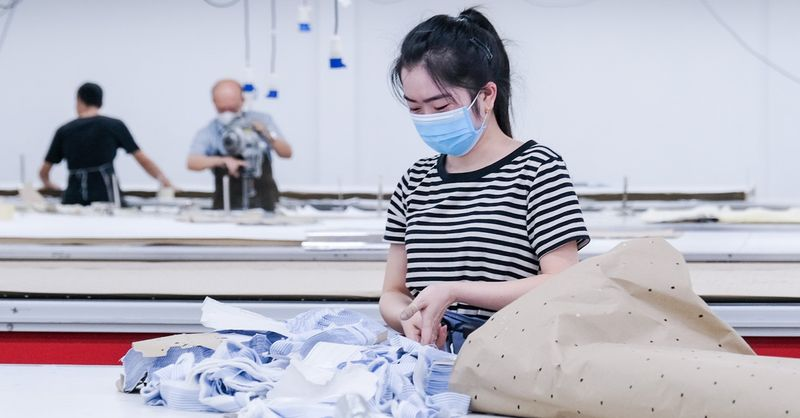
Đề xuất điều chỉnh lương tối thiểu để theo kịp giá xăng, điện, nước 🔗 MOI
Cán bộ công đoàn, người lao động đại diện cho 800.000 lao động toàn tỉnh kiến nghị nhiều vấn đề với lãnh đạo tỉnh Bắc Ninh - Ảnh: HÀ QUÂN Công nhân mong tăng lương, giảm ùn tắc giao thông Cụ thể, bà V
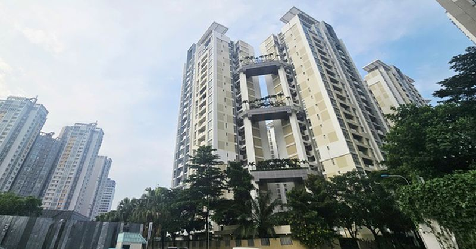
Lãi suất vay mua nhà mới nhất sau khi hàng loạt ngân hàng điều chỉnh giảm 🔗 MOI
TIN MỚI Hơn 1 tuần sau cuộc họp do Thống đốc Ngân hàng Nhà nước chủ trì triển khai công tác ngân hàng, hàng loạt ngân hàng thương mại đã điều chỉnh giảm mặt bằng lãi suất để hỗ trợ doanh nghiệp và ngư

Hùng An - thiên niên đại kế của Trung Quốc 🔗 MOI
Tổng Bí thư, Chủ tịch nước Tô Lâm và các đại biểu Việt Nam tại Khu mới Hùng An ngày 14-4 - Ảnh: TTXVN Khác với hai biểu tượng cải cách trước đó là Khu mới Phố Đông và Đặc khu kinh tế Thâm Quyến, Hùng

Sự thực về tivi 3 triệu đồng tràn ngập thị trường; giá hàng hóa neo cao dù xăng dầu giảm mạnh 🔗 MOI
Sự thực về tivi 3 triệu đồng tràn ngập thị trường Trong bối cảnh người tiêu dùng ngày càng cân nhắc chi tiêu, nhiều mẫu tivi giá rẻ chỉ khoảng 3 triệu đồng đang được các trung tâm điện máy chào bán, k
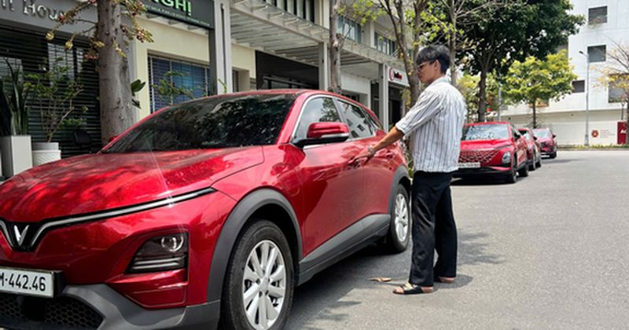
Thuê xe tự lái dịp lễ: Thừa xe xăng, khan xe điện 🔗 MOI
Thuê xe tự lái dịp lễ: Thừa xe xăng, khan xe điện Theo Nguyễn Hải | 19/04/2026 14:17 PM | Kinh doanh Theo dõi Cafebiz.vn trên Dịch vụ cho thuê xe tự lái dịp lễ năm nay sẽ chứng kiến sự bùng nổ nhu cầu

Cầm bằng đại học, nợ 1 tỷ đồng rồi thất nghiệp vì AI: Thế hệ Gen Z giành giật việc làm với Robot 🔗 MOI
Cầm bằng đại học 4 năm, nợ 1 tỷ đồng rồi thất nghiệp vì AI: Thế hệ Gen Z và cuộc chiến giành giật việc làm từ tay Robot Băng Băng | 19/04/2026 13:41 PM | Công nghệ Theo dõi Cafebiz.vn trên Giá trị bằn

20 đại học Mỹ được doanh nghiệp săn đón nhất 🔗 MOI
Tờ Forbes tuần trước công bố danh sách "New Ivies" - các đại học Mỹ được nhà tuyển dụng đánh giá cao về chất lượng cử nhân, ngoài nhóm 8 trường Ivy League truyền thống. Dữ liệu được tổng hợp từ khảo s

Justin Bieber biến Coachella thành 'đế chế' bán hàng 5 triệu USD 🔗 MOI
Thương hiệu thời trang của Justin Bieber thu 5 triệu USD trong ngày đầu tại Coachella - Ảnh: Coachella Theo The Street , lễ hội âm nhạc Coachella 2026 có sự khác biệt rõ rệt so với các năm trước, khôn

Thỏa thuận Mỹ - Iran sắp định hình 🔗 MOI
Mỹ - Iran đang nỗ lực đạt thỏa thuận hòa bình dù gặp nhiều trở ngại - Ảnh: AFP Ngày 17-4, Ngoại trưởng Iran Abbas Araghchi cho biết eo biển Hormuz đã " mở cửa hoàn toàn " cho tàu thương mại trong thời

Tây Ban Nha, Brazil, Mexico cam kết tăng viện trợ cho Cuba 🔗 MOI
Người dân Cuba tuần hành hôm 16-4 nhân kỷ niệm 65 năm sự kiện vịnh Con Lợn - Ảnh: AFP Trong tuyên bố chung của Tây Ban Nha, Brazil và Mexico ngày 18-4, Mỹ không được đề cập trực tiếp. Tuy nhiên theo g

Lãi suất ngân hàng Techcombank mới nhất: Kỳ hạn nào có lãi suất cao nhất hiện nay? 🔗 MOI
TIN MỚI Ngân hàng TMCP Kỹ Thương Việt Nam (Techcombank) mới đây đã cập nhật biểu lãi suất huy động mới áp dụng từ ngày 11/04/2026. Theo đó, lãi suất các kỳ hạn dưới 6 tháng tiếp tục duy trì ở mức cao

Bế tắc với Iran, Mỹ mở mặt trận mới khắp đại dương 🔗 MOI
TIN MỚI Các quan chức Mỹ cho biết quân đội nước này đang chuẩn bị triển khai chiến dịch ập lên các tàu chở dầu liên quan đến Iran để kiểm tra và tịch thu các tàu thương mại liên quan đến Iran trên vùn
Cục Hàng không đề nghị Trung Quốc duy trì nguồn cung nhiên liệu bay 🔗 MOI
Cục trưởng Cục Hàng không Việt Nam Uông Việt Dũng mới có thư gửi Tổng Cục trưởng tổng Cục Hàng không dân dụng Trung Quốc về vấn đề nguồn cung cấp xăng dầu hàng không trong bối cảnh chiến sự Trung Đông

Thêm ngân hàng thu hồi nợ của Bamboo Airways 🔗 MOI
Ngân hàng Hàng hải Việt Nam (MSB) cho biết sẽ thu giữ tài sản bảo đảm để thu hồi nợ theo thỏa thuận trong hợp đồng thế chấp ký với Công ty cổ phần Hàng không Tre Việt (Bamboo Airways). Danh mục tài sả
Xung đột Trung Đông: Mỹ họp khẩn, thời khắc then chốt với Iran đang tới 🔗 MOI
Tổng thống Mỹ Donald Trump tìm cách hóa giải bài toán khó ở eo biển Hormuz (Ảnh minh họa có sử dụng AI: The Indian Express). Súng đã nổ, Iran siết chặt eo biển Hormuz, ông Trump họp khẩn Hôm 18/4, Ira

Công an điều tra, truy tìm bé trai ở Lào Cai mất tích nhiều ngày 🔗 MOI
Trao đổi với Tuổi Trẻ Online sáng 19-4, ông Đỗ Cao Quyền - Chủ tịch UBND xã Mỏ Vàng (tỉnh Lào Cai) - cho biết cơ quan công an đang điều tra, truy tìm một bé trai 12 tuổi ở địa bàn mất tích từ ngày 9-4
Quỹ đầu tư vàng lớn nhất thế giới gom 8 tấn trong một tuần 🔗 MOI
Đầu tuần này, SPDR bán hơn 5 tấn vàng. Quỹ sau đó đảo chiều giao dịch khi mua ròng suốt những phiên còn lại với khối lượng tổng cộng 13,4 tấn. Quỹ hiện nắm giữ hơn 1.060 tấn vàng, tăng 8 tấn so với cu

Cận cảnh công trường dự án mở rộng sân bay Phú Quốc phục vụ APEC 2027 🔗 MOI
TIN MỚI Trong 21 dự án phục vụ Diễn đàn kinh tế châu Á - Thái Bình Dương 2027 (APEC 2027), dự án mở rộng Cảng Hàng không Quốc tế Phú Quốc (đặc khu Phú Quốc, tỉnh An Giang) là một trong những công trìn

Thị trường sôi động trước siêu chính sách ‘khóa trần’ lãi suất của Vinhomes 🔗 MOI
Khách hàng và nhà đầu tư nườm nượp đổ về sự kiện “Tọa độ xanh - Đô thị biển quốc tế” để chớp cơ hội, sở hữu tài sản thực tại Vinhomes Green Paradise. ‘Lãi vay mua nhà Vinhomes thấp hơn vay mua NƠXH’ N

Kỷ lục Guinness cho Robot thú cưng AI "vô dụng" nhất thế giới thuộc về Nhật Bản, chữa lành nỗi cô đơn cho người già 🔗 MOI
Kỷ lục Guinness cho Robot AI "vô dụng" nhất thế giới thuộc về Nhật Bản, dùng để chữa lành nỗi cô đơn cho người già Quỳnh Phương | 19/04/2026 09:49 AM | Công nghệ Theo dõi Cafebiz.vn trên Giữa thời đại
Doanh thu Intimex gần 4 tỉ USD, “ông trùm cà phê” Đỗ Hà Nam có mức thù lao gây bất ngờ 🔗 MOI
TIN MỚI Trong báo cáo gửi cổ đông, Tập đoàn Intimex thông tin năm 2025 doanh nghiệp đạt tổng doanh thu hơn 98.505 tỉ đồng, tăng 27% so với năm 2024; tổng kim ngạch xuất nhập khẩu hơn 2 tỉ USD, tăng 48
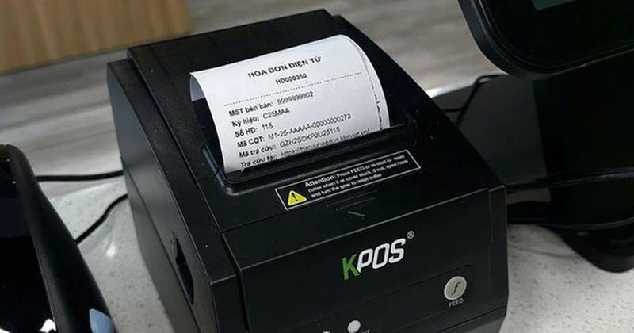
Cục Thuế thông tin về sử dụng hóa đơn điện tử của hộ kinh doanh có doanh thu dưới 500 triệu đồng/năm 🔗 MOI
TIN MỚI Thời gian gần đây, một số cơ quan thuế địa phương đã thông báo hoặc hướng dẫn hộ kinh doanh có doanh thu dưới 500 triệu đồng/năm dừng sử dụng hóa đơn điện tử, đồng thời cho rằng trường hợp tiế
Tỷ phú Phạm Nhật Vượng bất ngờ tung “cú nổ" lớn gây choáng váng toàn thị trường khi nhiều đại gia BĐS vẫn đang "đau đầu" vì lãi suất 🔗 MOI
TIN MỚI Trong bối cảnh lãi suất cho vay bất động sản hiện nay ở mức cao, cạnh tranh về chính sách thanh toán cũng như hỗ trợ lãi suất đang được xem là “con át chủ bài” trong chính sách bán hàng của cá
Hóa chất Đức Giang miễn nhiệm Chủ tịch Đào Hữu Huyền và con trai 🔗 MOI
Công ty cổ phần Tập đoàn Hóa chất Đức Giang (mã chứng khoán: DGC) công bố tài liệu kỳ họp cổ đông bất thường năm 2026. Doanh nghiệp này dự kiến trình cổ đông thông qua việc miễn nhiệm 3 thành viên Hội

Loạt lãnh đạo doanh nghiệp niêm yết vướng vòng lao lý 🔗 MOI
TIN MỚI Chủ tịch và Phó Chủ tịch Tập đoàn Hóa chất Đức Giang Theo thông tin do Bộ Công an công bố, ngày 25/12/2025 và ngày 14/3/2026, Cục Cảnh sát điều tra tội phạm về tham nhũng, kinh tế, buôn lậu đã

Hộ kinh doanh lưu ý gì trong kỳ kê khai thuế đầu tiên? 🔗 MOI
TIN MỚI Theo bà Lê Thị Chinh, Phó trưởng Ban Nghiệp vụ thuế cho biết, Nghị định 68 và Thông tư 18 của Bộ Tài chính vừa mới ban hành đã quy định cụ thể về chính sách và quản lý thuế đối với hộ kinh doa

Xe bị lật nhiều vòng vì tông phải cá sấu, nữ tài xế thoát chết thần kỳ 🔗 MOI
Hình ảnh chiếc xe sau vụ tai nạn - Ảnh: CBS12 Một vụ tai nạn xảy ra tại bang Florida (Mỹ) khi một phụ nữ tông phải cá sấu trên đường, khiến chiếc xe bị lật nhiều vòng và hư hỏng nặng. Nạn nhân là Masl

Bọ chét chó, mèo ‘tấn công’ người, gây ngứa ngáy, viêm da vì điều trị sai cách 🔗 MOI
Tổn thương da lan rộng sau khi bị bọ chét cắn nhưng điều trị sai cách - Ảnh: BVCC Điều trị sai cách khiến tổn thương lan rộng Nam thanh niên 20 tuổi đến Bệnh viện Da liễu Trung ương trong tình trạng s

Video giây phút hung thủ xả súng khiến nhiều người chết tại Ukraine 🔗 MOI

Google tích hợp AI vào Chrome, tìm kiếm không cần mở trang 🔗 MOI
Google tích hợp AI vào thanh địa chỉ Chrome, biến trình duyệt thành trợ lý thông minh - Ảnh: Google Mới đây, Google tích hợp trí tuệ nhân tạo trực tiếp vào thanh địa chỉ Chrome, đánh dấu thay đổi đáng

Văn Tuần thắng đòn bẻ tay để giữ đai vô địch 56kg 🔗 MOI
Lê Văn Tuần bảo vệ thành công đai vô địch 56kg - Ảnh: LC30 Trận tranh đai hạng cân 56kg tại Lion Championship - LC30 - khép lại với chiến thắng thuyết phục và giàu cảm xúc dành cho Lê Văn Tuần trước T

Đồng tiền đẫm máu từ ma tuý Mỹ Latin - Kỳ 1: 'Chúa tể gà trống' El Mencho 🔗 MOI
Báo chí Mexico đưa tin trùm ma túy El Mencho bị tiêu diệt ngày 22-2-2026 - Ảnh: Reuters Ngày 7-3-2026 (giờ địa phương), trong khuôn khổ hội nghị cấp cao "Lá chắn châu Mỹ" tại Florida, Chính phủ Mỹ đã

Hai người dự tiệc sinh nhật rơi xuống sông mất tích khi tàu cập bến tại Mỹ Tho 🔗 MOI

Đội bóng Trung Quốc thắng trận nhờ... mời Hạng Vũ xuất trận 🔗 MOI
Hình tượng Hạng Vũ gây sốt ở trận bóng đá cấp tỉnh Trung Quốc - Ảnh: SOHU Trận đấu kể trên diễn ra tối 18-4 trên sân Olympic Túc Thiên, thuộc Giải bóng đá các thành phố tỉnh Giang Tô 2026, còn được ng
Chàng trai 18 tuổi xin được sống, gia đình bất lực trước 70 triệu mổ tim 🔗 MOI
Chàng trai 18 tuổi xin được sống, gia đình bất lực trước 70 triệu mổ tim Lời khẩn cầu nghẹn lòng của chàng trai 18 tuổi mang bệnh hiểm nghèo: “Cháu muốn được sống” Một ngày giữa tháng 4, phóng viên Dâ

TP.HCM đẩy nhanh đốt rác phát điện 🔗 MOI
Dự án đốt rác phát điện của Công ty cổ phần Vietstar tại khu xử lý rác Tây Bắc TP.HCM đang thi công - Ảnh: L.P. Mỗi ngày, khối lượng rác phát sinh trên toàn thành phố lên tới khoảng 14.000 tấn, buộc t

Iran nổ súng chặn hai tàu Ấn Độ đi qua eo biển Hormuz 🔗 MOI
Xuồng cao tốc của Iran di chuyển trên eo biển Hormuz - Ảnh: AP Theo các nguồn tin của Đài NDTV, tàu Jag Arnav và Sanmar Herald treo cờ Ấn Độ "đã bị tấn công trực diện" tại eo biển Hormuz ngày 18-4, là

Tấm lòng giúp người của ông Tư Ngoan 🔗 MOI
Ông Tư Ngoan (tóc bạc) chẩn đoán và cấp thuốc nam miễn phí hoàn toàn - Ảnh: AN VI Phòng khám ấy nổi tiếng đến độ mới tới bến phà Năng Gù cách đó gần 20km, hỏi phòng khám Tư Ngoan ở đâu thì tất cả cùng

Từ 1-7, thông tin lý lịch tư pháp sẽ hiển thị trên ứng dụng VNeID 🔗 MOI
Giao diện ứng dụng VNeID - Ảnh: DANH TRỌNG Bộ Công an đang xây dựng dự thảo thông tư quy định sử dụng biểu mẫu; quản lý, sử dụng, khai thác cơ sở dữ liệu lý lịch tư pháp; trình tự, thủ tục cấp phiếu l

Tăng tốc xử lý đất yếu đoạn phía tây vành đai 3 TP.HCM sau phản ánh của Tuổi Trẻ 🔗 MOI
Máy chuyên dụng cắm bấc thấm xuống nền đất yếu theo mạng lưới dày đặc, tạo đường dẫn thoát nước trong lòng đất ở gói thầu phía tây dự án vành đai 3 TP.HCM Vành đai 3 TP.HCM đoạn phía tây gồm 5 gói (XL

Hai người đàn ông té xuống sông Tiền mất tích sau khi dự tiệc sinh nhật trên tàu du lịch 🔗 MOI
Cơ quan công an điều tra vụ việc - Ảnh: HOÀI THƯƠNG Sáng 19-4, Đội Cảnh sát phòng cháy chữa cháy và cứu nạn cứu hộ trên sông Công an tỉnh Đồng Tháp vẫn đang phối hợp Công an phường Đạo Thạnh và các đơ
Lisa gây sốt toàn cầu với tạo hình thiên thần gợi cảm tại Coachella 🔗 MOI
Ngày 18/4, Lisa góp mặt trên sân khấu chính của lễ hội âm nhạc hàng đầu nước Mỹ, kết hợp cùng Anyma - DJ kiêm nhà sản xuất nổi tiếng với phong cách âm nhạc điện tử mang màu sắc tương lai. Tiết mục còn

Hai người mất tích trên sông Tiền sau tiệc sinh nhật 🔗 MOI
Tối qua, ông Võ Văn Tùng (53 tuổi, ngụ phường Thới Sơn, Đồng Tháp) cùng ông Trịnh Quang Sơn (73 tuổi, ở TP HCM) và khoảng 10 người dự tiệc sinh nhật trên tàu du lịch do Nguyễn Thanh Tân (23 tuổi) điều
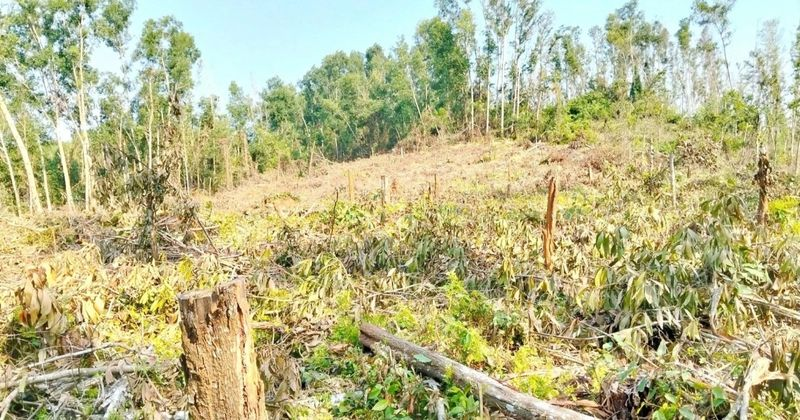
Nguyên giám đốc ban quản lý rừng phòng hộ chiếm đất, tự ý khai thác rừng? 🔗 MOI
Ngày 19/4, Sở Nông nghiệp và Môi trường tỉnh Gia Lai cho biết Chi cục Kiểm lâm đã có kết quả kiểm tra, xác minh liên quan đến vụ ông Bùi Văn Thăng, nguyên Giám đốc Ban Quản lý rừng phòng hộ huyện Phù

Phải cẩu nhà, dời đi vì xây nhầm trên đất hàng xóm 🔗 MOI
Đầu tháng 4, David và Melanie Moor thuê đội vận chuyển cắt rời ngôi nhà 4 phòng ngủ để cẩu sang lô đất liền kề tại thị trấn Camperdown, bang Victoria. Việc di dời khép lại vụ tranh chấp pháp lý kéo dà

Cố sinh con ở Mỹ dù đã bị trục xuất 🔗 MOI
Diana Acosta Verde, 27 tuổi, từ Honduras vượt biên vào Mỹ 4 năm trước và xin tị nạn dưới thời chính quyền tổng thống Joe Biden. Sau đó cô gặp bạn trai Jaime Murillo Padilla, người được bố mẹ đưa vào M

Mỹ dựng “lá chắn thép” ngoài khơi Iran: Tàu khu trục làm xương sống, Hormuz nóng lên từng giờ 🔗 MOI
TIN MỚI Tàu khu trục Mỹ là trọng tâm của chiến dịch phong tỏa Các tàu khu trục mang tên lửa dẫn đường của hải quân Mỹ đang đóng vai trò trung tâm trong chiến dịch phong tỏa quân sự các cảng của Iran,

Điện ảnh Việt từng có một bộ phim quy tụ dàn sao có thành tích 'khủng' 🔗 MOI
Chơi vơi (2009) của đạo diễn Bùi Thạc Chuyên là một trong những tác phẩm mang đậm dấu ấn cá nhân của điện ảnh Việt, giai đoạn cuối những năm 2000. Bộ phim gây chú ý khi là phim nhựa đầu tiên của Việt

Đối chiếu sinh trắc học từng giao dịch ngăn chặn gian lận, bảo vệ khách hàng 🔗 MOI
TIN MỚI Trong bối cảnh kinh tế số, chuyển đổi số ngày càng mở rộng phạm vi và chiều sâu trong tất cả các ngành, lĩnh vực, Ngân hàng Nhà nước Việt Nam (NHNN) chủ trương vừa chú trọng phát triển dịch vụ

Robot hình người Trung Quốc vượt kỷ lục nhà vô địch marathon 🔗 MOI
Hàng chục robot hình người do Trung Quốc sản xuất tham gia cuộc chạy đua bán marathon (21 km) tổ chức ngày 19/4, với khả năng vận động cải thiện rõ rệt so với năm trước, cho thấy bước tiến nhanh của c

Nguồn cung ít và tỉ lệ chọi cao, nhà ở xã hội âm thầm tăng giá 🔗 MOI
Nhiều người dân tìm đến dự án nhà ở xã hội Lý Thường Kiệt nộp hồ sơ đăng ký mua dù đây chưa phải là thời điểm chủ đầu tư được phép mở bán - Ảnh: TRẦN TIẾN DŨNG Mỗi sáng trước giờ vào ca, anh Nguyễn Vă

Hồ nước ngọt lớn nhất miền Tây 250 tỉ đồng: Xây xong 2 năm vẫn ‘trùm mền’ chờ nhà máy 🔗 MOI
Nhiều khu vực bờ hồ xuất hiện cây cỏ mọc và mái hồ bị sụp xuống - Ảnh: THANH HUYỀN Hồ chứa nước ngọt lớn nhất miền Tây nằm tại xã Khánh An, huyện U Minh, tỉnh Cà Mau với diện tích 102ha. Dự án được kỳ

Công an Hà Nội sẽ làm việc với các quản trị viên hội nhóm 'xe ghép, xe tiện chuyến' 🔗 MOI
"Xe ghép" thường có biển trắng, trong hình là ô tô vi phạm được công an ghi hình lại - Ảnh: Công an cung cấp Theo đó, cử tri các phường Vĩnh Tuy, Giảng Võ, Láng, Hoàn Kiếm, Cửa Nam kiến nghị các cơ qu
Loạt đất vàng 'quây tôn' ở trung tâm TP.HCM được đổi cho nhà đầu tư xây hạ tầng 🔗 MOI
TIN MỚI HĐND TP.HCM ngày 18/4 đã thông qua tờ trình của UBND TP.HCM về danh mục các khu đất thanh toán cho nhà đầu tư thực hiện các dự án BT (Xây dựng - Chuyển giao) đợt 1. Hầu hết các khu đất này là

Jessica Alba dắt con trai út cùng đi hẹn hò 🔗 MOI
Theo Page Six , Jessica Alba, 45 tuổi, và người tình kém 11 tuổi Danny Ramirez đi chơi cùng con trai cô tại Los Angeles ngày 17/4. Trong một bức ảnh do paparazzi chụp, Alba cười khi bé Hayes chín tuổi
Con lai lớn lên ở nước ngoài, nhập quốc tịch Việt Nam ra sao? 🔗 MOI
Tôi 28 tuổi, sinh ra và lớn lên tại Đức. Bố tôi là người Việt Nam đi xuất khẩu lao động năm 1995, mẹ là người Đức. Khi sinh tôi, gia đình chỉ làm giấy tờ theo quốc tịch nước sở tại, không đăng ký khai

Lộ diện loạt doanh nghiệp đầu ngành góp vốn lập Quỹ đầu tư mạo hiểm TP.HCM 🔗 MOI
VIC&FPT&VNZ: Giá hiện tại Thay đổi Xem hồ sơ doanh nghiệp TIN MỚI Chiều 17/4, UBND TP.HCM công bố ra mắt Quỹ đầu tư mạo hiểm hoạt động dưới hình thức công ty cổ phần. Quỹ có tên đầy đủ là Công ty Cổ p

Khoảng 2,3 triệu hộ kinh doanh đã đăng ký eTax Mobile 🔗 MOI
TIN MỚI Người nộp thuế dùng ứng dụng eTax Mobile. Ảnh: Thu Hiền/TTXVN Đây là thực tế được nêu ra tại hội thảo "Hộ kinh doanh: Minh bạch dòng tiền, mở rộng cơ hội kinh doanh", do Cục Thuế (Bộ Tài chính

Kỷ lục Guinness cho Robot AI "vô dụng" nhất thế giới thuộc về Nhật Bản, dùng để chữa lành nỗi cô đơn cho người già 🔗 MOI
TIN MỚI Đại học Oita (Nhật Bản) hiện đang tiến hành kêu gọi vốn cộng đồng để hỗ trợ một sinh viên cao học đang phát triển loại robot biết "nhõng nhẽo" nhằm khuyến khích người cao tuổi ra khỏi nhà. Thô

Xả súng và bắt cóc con tin ở thủ đô Ukraine, ít nhất 6 người thiệt mạng 🔗 MOI
Trang truyền thông RBC Ukraine cho hay một nghi phạm có vũ trang đã xông vào siêu thị giữa thủ đô Kiev vào tối 18/4, khiến một số dân thường có mặt ở đó bị thương, bắt cóc các con tin và cố thủ trong

Nghi án bố đánh con trai 12 tuổi tử vong ở Lào Cai: Chi tiết gây sốc 🔗 MOI
Nghi án bố đánh con trai 12 tuổi tử vong vì cho rằng trộm 100.000 đồng: Công an thông tin chi tiết khó tin Theo Hương Trà | 19/04/2026 10:13 AM | Xã hội Theo dõi Cafebiz.vn trên Lãnh đạo UBND xã Mỏ Và

Gần 1.500 thí sinh tham dự vòng loại quốc gia vô địch Tin học văn phòng thế giới 🔗 MOI
Đại diện ban tổ chức thăm hỏi, động viên thí sinh trước giờ thi - Ảnh: BTC Vòng loại quốc gia cuộc thi vô địch Tin học văn phòng thế giới (MOS World Championship) do Trung ương Đoàn TNCS Hồ Chí Minh p
Xe hybrid tăng mạnh tiêu thụ sau khi được áp thuế tiêu thụ đặc biệt mới 🔗 MOI
Trong tháng 3, các thành viên thuộc Hiệp hội Các nhà Sản xuất Ô tô Việt Nam (VAMA) bán ra tổng cộng 3.149 xe hybrid, tăng gần 2,8 lần so với tháng trước. Bên cạnh xu thế tăng trưởng chung của thị trườ
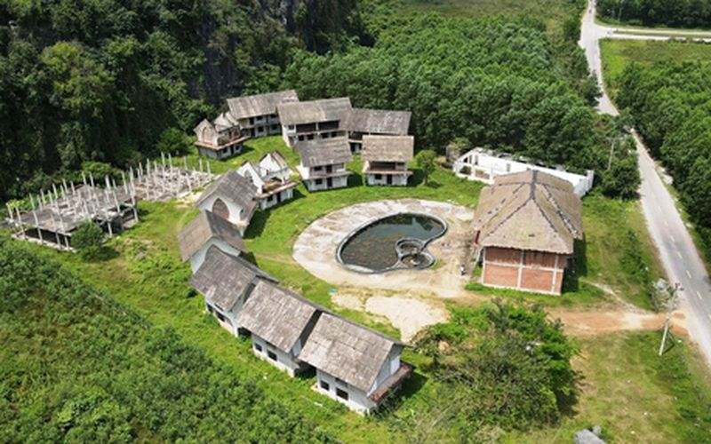
Nhiều dự án dang dở tại trung tâm du lịch Phong Nha 🔗 MOI
Nhiều dự án dang dở tại trung tâm du lịch Phong Nha Theo Ngô Thị Huyền | 19/04/2026 13:50 PM | Kinh doanh Theo dõi Cafebiz.vn trên Tại trung tâm du lịch Phong Nha, tỉnh Quảng Trị vẫn còn nhiều dự án d

Qualcomm hợp tác CXMT phát triển DRAM riêng cho smartphone giữa lúc nguồn cung khan hiếm 🔗 MOI
Qualcomm hợp tác CXMT phát triển DRAM riêng cho smartphone giữa lúc nguồn cung khan hiếm Theo Max | 19/04/2026 13:00 PM | Công nghệ Theo dõi Cafebiz.vn trên Giá DRAM tăng mạnh do nhu cầu AI khiến các

Tại sao cả ngành bán dẫn lại đang phụ thuộc vào một hãng bột ngọt Nhật Bản? 🔗 MOI
TIN MỚI Nếu bạn nghĩ Ajinomoto chỉ gắn liền với những gói bột ngọt quen thuộc trong gian bếp, thì có lẽ bạn đã bỏ lỡ một trong những "bí mật" quyền lực nhất của ngành công nghiệp bán dẫn toàn cầu. Ít

Vision Pro thất bại 2024 khiến Apple Store hỗn loạn và nội bộ căng thẳng 🔗 MOI
Vision Pro thất bại: Siêu phẩm 3.500 USD khiến nội bộ căng thẳng, Apple Store hỗn loạn, trở thành 'bom xịt' của CEO Tim Cook Lại Dịu | 19/04/2026 11:07 AM | Công nghệ Theo dõi Cafebiz.vn trên Doanh th

Hiểu đúng về quy định chia, tách lệnh thanh toán từ 500 triệu đồng trở lên 🔗 MOI
Hiểu đúng về quy định chia, tách lệnh thanh toán từ 500 triệu đồng trở lên Theo Hồng Sơn | 19/04/2026 10:45 AM | Công nghệ Theo dõi Cafebiz.vn trên Trong bối cảnh chuyển đổi số diễn ra mạnh mẽ, thanh

Sàn crypto “Make in Vietnam”: Làm gì để giữ chân dòng tiền? 🔗 MOI
TIN MỚI Ảnh minh hoạ: Int Nghị quyết 05/NQ-CP đánh dấu bước ngoặt pháp lý khi chính thức triển khai thị trường tài sản mã hoá tại Việt Nam trong vòng 5 năm. Tuy nhiên, một thách thức rất lớn là làm sa

4 ngành học cũ nhưng không lỗi thời, AI không thể thay thế 🔗 MOI
4 ngành học cũ nhưng không lỗi thời, AI không thể thay thế Theo Thiên An | 19/04/2026 10:00 AM | Công nghệ Theo dõi Cafebiz.vn trên Giữa cơn bão AI, đây là 4 ngành học vẫn vững ghế nhờ sở hữu những gi
Cảnh nào trong Godzilla Minus Zero lấy cảm hứng từ phim Cloverfield? 🔗 MOI
Dù lấy cảm hứng từ Cloverfield, Takashi Yamazaki nhấn mạnh tác phẩm không lặp lại mô típ cũ mà sẽ mang đến hướng phát triển mới, với những diễn biến bất ngờ xoay quanh mục đích của Godzilla - Ảnh: Toh
🔗 MOI
Cặp đôi Taylor Swift và Travis Kelce vừa có màn ngụy trang kín đáo tại New York để chuẩn bị cho siêu đám cưới sắp tới. Taylor Swift và Travis Kelce dùng ba chiếc dù đen che chắn. Giữa lúc dân tình đan

El Nino sắp xuất hiện, tác động đến mưa, nguồn nước ở Việt Nam thế nào? 🔗 MOI
Lòng hồ thủy điện Sơn La (khu vực Mường Lay, tỉnh Điện Biên) cạn trơ đáy, nứt nẻ năm 2023 - Ảnh: NGUYỄN KHÁNH Như Tuổi Trẻ Online đưa tin, Bộ Nông nghiệp và Môi trường vừa có báo cáo gửi Ban Chỉ đạo P

Bám váy mẹ: Bám và buông trong thế giới bé mọn này 🔗 MOI
Bìa quyển Bám váy mẹ (NXB Kim Đồng, 2026) Cái công việc bếp núc thường chỉ được ghi nhận bằng một dòng ở trang cuối cùng của cuốn sách. Trang sách này lại thường không mấy ai lật đến. Giờ thì từ trang

Kỳ Duyên đáp trả fan chuyện xây trường, nhận bão tranh cãi 🔗 MOI
Hoa hậu Kỳ Duyên có nhiều phát ngôn gây tranh cãi trên mạng xã hội - Ảnh: FBNV Ngay sau khi ông Valentin Tran bất ngờ công bố từ bỏ bản quyền Miss Universe tại Việt Nam sau hai năm nắm giữ, nhiều ngườ
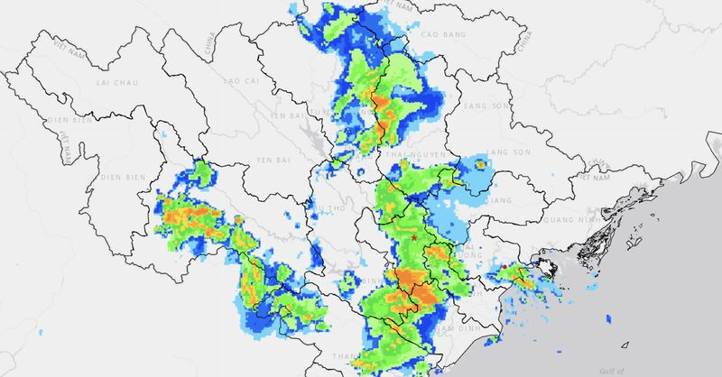
'Bức tường dông' khổng lồ đang quét Bắc Bộ 🔗 MOI
Ra đa cho thấy 'bức tường dông' khổng lồ đang quét qua, gây mưa ở Bắc Bộ - Ảnh: HYMETNET Theo Trung tâm Dự báo khí tượng thủy văn quốc gia, đêm qua và sáng nay (19-4), khu vực Tây Bắc Bộ có mưa rào và

9 việc làm khiến thị lực ngày càng suy yếu 🔗 MOI
Việc ngủ quên khi đang đeo kính áp tròng tạo điều kiện cho vi khuẩn phát triển mạnh trên bề mặt mắt - Ảnh: AI Các vấn đề như mờ mắt, nhiễm trùng, tổn thương giác mạc hay bệnh võng mạc ngày càng phổ bi

Công an giúp dân tìm lại người cha sau hơn 30 năm thất lạc 🔗 MOI
Hai cha con chị Lê Thị Hằng gặp lại nhau sau hơn 30 năm - Ảnh: Công an tỉnh Thanh Hóa cung cấp Theo Công an tỉnh Thanh Hóa, ngày 16-4-2026, chị Lê Thị Hằng (34 tuổi, trú xã Hậu Lộc, tỉnh Thanh Hóa) gử

Tin tức sáng 19-4: Hơn 16.300 người được hưởng lương hưu mới 🔗 MOI
Người cao tuổi nhận lương hưu tại một điểm chi trả ở Hà Nội - Ảnh: HÀ QUÂN Hơn 16.300 người được hưởng lương hưu mới Tin tức từ Bộ Nội vụ cho biết, trong quý 1-2026, cả nước có khoảng 3,49 triệu người

Thủ lĩnh Hezbollah đưa ra điều kiện duy trì hòa bình với Israel 🔗 MOI
Nhóm vũ trang Hezbollah được cho là sở hữu sức mạnh lớn hơn cả quân đội Lebanon - Ảnh: REUTERS Báo New York Times đưa tin, ngày 18-4, trong bối cảnh lệnh ngừng bắn 10 ngày giữa Hezbollah và Israel đan

Xây dựng 'xã hội phúc lợi' 🔗 MOI
Đã có gần 30.000 người dân TP.HCM được khám sức khỏe miễn phí trong ngày 17-4 - Ảnh: XUÂN MAI Hàng trăm bác sĩ đã đồng loạt có mặt tại 168 phường, xã, đặc khu để trực tiếp khám sức khỏe , tầm soát bện

Cháy nhà khu Ba Toa Đà Lạt, các lực lượng vất vả dập lửa 🔗 MOI
Căn nhà của ông Nguyễn Hữu Hà (ở giữa) bị ngọn lửa thiêu rụi hoàn toàn - Ảnh: M.V. Vụ cháy xảy ra trên đường Tô Ngọc Vân (khu vực Ba Toa, phường Cam Ly - Đà Lạt) khoảng 9h30 sáng 19-4 khiến cả khu dân

Thống nhất chủ trương nâng mức bồi thường nhà cửa tại dự án cao tốc Quy Nhơn - Pleiku 🔗 MOI
Công nhân khẩn trương tổ chức thi công trên công trình dự án đường bộ cao tốc Quy Nhơn - Pleiku - Ảnh: TẤN LỰC Cùng với việc nâng đơn giá bồi thường nhà cửa, vật kiến trúc, lãnh đạo tỉnh Gia Lai yêu c

Đồng Nai: Bắt tạm giam 1 nguyên cán bộ phường lừa đảo hơn 28 tỉ đồng 🔗 MOI
Đồng Nai: Bắt tạm giam 1 nguyên cán bộ phường lừa đảo hơn 28 tỉ đồng Theo Nguyễn Tuấn | 19/04/2026 13:31 PM | Xã hội Theo dõi Cafebiz.vn trên Nguyệt lợi dụng nội dung ủy quyền để thực hiện chuyển nhượ
Hai người đàn ông rơi xuống sông mất tích trong đêm 🔗 MOI
Ngày 19/4, Công an phường Đạo Thạnh (tỉnh Đồng Tháp) cho biết đang phối hợp các đơn vị khẩn trương tìm kiếm tung tích 2 người rơi xuống sông ở khu vực Cảng Du thuyền thuộc khu phố 11. Theo thông tin b

Cảnh giác vì cuộc gọi lừa đảo đọc vanh vách số thẻ ngân hàng, CCCD: Dữ liệu của bạn đã bị bán đi đâu? 🔗 MOI
Cảnh giác vì cuộc gọi lừa đảo đọc vanh vách số thẻ ngân hàng, CCCD: Dữ liệu của bạn đã bị bán đi đâu? Theo Khả Văn | 19/04/2026 12:59 PM | Xã hội Theo dõi Cafebiz.vn trên Kẻ lừa đảo không hề ngẫu nhiê

Hai người đàn ông rơi xuống sông mất tích sau tiệc sinh nhật trên tàu du lịch 🔗 MOI
Sáng 19/4, lực lượng Cảnh sát phòng cháy chữa cháy và cứu nạn, cứu hộ Công an tỉnh Đồng Tháp phối hợp với Công an phường Đạo Thạnh cùng các đơn vị liên quan tìm kiếm hai người rơi xuống sông Tiền mất

Bắt Phan Văn Lợi SN 1986 - chủ của 567 tấn da bò đổ trái phép ra môi trường 🔗 MOI
Bắt Phan Văn Lợi SN 1986 - chủ của 567 tấn da bò đổ trái phép ra môi trường Theo Trang Anh | 19/04/2026 12:18 PM | Xã hội Theo dõi Cafebiz.vn trên Cơ quan điều tra xác định, hành vi của Phan Văn Lợi v
Vinhomes Hải Vân Bay: Giao dịch sôi động nhờ chính sách hỗ trợ lãi suất 🔗 MOI
Giao dịch khởi sắc Sau khi Vinhomes công bố chính sách hỗ trợ lãi suất 0-6%/năm trong 5 năm, văn phòng bán hàng của Vinhomes Hải Vân Bay tại Hà Nội ngày 18/4 ghi nhận lượng khách tăng đột biến. Chính
Chiến sự Ukraine 19/4: "Con đường tử thần" ở Konstantinovka 🔗 MOI
Chiến sự Ukraine tiếp diễn ác liệt (Ảnh minh họa: Skynews). Ông Zelensky nói Nga có thể mở mặt trận mới từ hướng Belarus Military Summary đưa tin, Tổng thống Ukraine Volodymyr Zelensky cho rằng Belaru

Ngân hàng tư nhân đầu tiên có lượng tài sản thế chấp vượt 3 triệu tỷ 🔗 MOI
TIN MỚI Ảnh minh họa Theo báo cáo tài chính quý 1/2026 vừa được Ngân hàng TMCP Việt Nam Thịnh Vượng (VPBank) công bố, lượng tài sản thế chấp tại nhà băng này đã vượt mốc 3 triệu tỷ đồng. Tại thời điểm

Miền Bắc mưa dông rải rác ngày 19 / 4: Nhiệt độ dễ chịu và cảnh báo thiên tai 🔗 MOI
Miền Bắc đón thêm nhiều đợt mưa dông Theo Nguyễn Hoài | 19/04/2026 11:36 AM | Xã hội Theo dõi Cafebiz.vn trên Ngày hôm nay (19/4), miền Bắc và Thanh Hoá tiếp tục có mưa rào và dông rải rác, cục bộ có

Mưa đá ở Sơn La 2026: Thiên tai bất ngờ gây thiệt hại lớn cho người dân 🔗 MOI
Mưa đá dày đặc ở Sơn La, đồi núi trắng xóa sau cơn dông Theo Viên Minh/VTC | 19/04/2026 11:27 AM | Xã hội Theo dõi Cafebiz.vn trên Tối 18/4, mưa đá bất ngờ trút xuống xã Phiêng Cằm (tỉnh Sơn La), nhữn

Lần đầu tiên Vingroup, Sovico, VinaCapital, FPT, VNG… cùng góp vốn vào một quỹ đầu tư mạo hiểm, bất ngờ với cổ đông lớn nhất 🔗 MOI
TIN MỚI Ngày 17/4, CTCP Quỹ Đầu tư Mạo hiểm TP. Hồ Chí Minh (HCM VIF) chính thức ra mắt với vốn điều lệ ban đầu 500 tỷ đồng. Ngân sách Thành phố góp 40%, tương đương 200 tỷ đồng; 300 tỷ còn lại là sự

Áo phao hành khách Titanic được đấu giá hơn 900.000 USD 🔗 MOI
Nhà đấu giá Henry Aldridge & Son của Anh ngày 18/4 tổ chức buổi đấu giá các kỷ vật liên quan thảm kịch Titanic xảy ra năm 1912. Nổi bật nhất trong số này là áo phao được bà Laura Mabel Francatelli, hà
Món ăn mùi vị kỳ quặc ở Mỹ chỉ bán theo mùa, khách tranh mua "cháy hàng" 🔗 MOI
Kem tôm hùm hút khách tại Mỹ Tại cửa hàng Red Circle Ice Cream ở thành phố Houston, món kem tôm hùm đã trở thành “đặc sản mùa vụ” mỗi dịp xuân về - thời điểm tôm hùm vào mùa ngon nhất. Cửa hàng này ho

Gần 4.000 căn nhà ở dự án trên khu “đất vàng” Cao Xà Lá do Masterise Homes phát triển được phép bán cho người nước ngoài 🔗 MOI
TIN MỚI Theo Sở Xây dựng, 3.944 căn hộ tại khu chức năng đô thị số 233, 233B và 235 đường Nguyễn Trãi được phép bán cho người nước ngoài. Sở Xây dựng TP Hà Nội vừa có văn bản trả lời chủ đầu tư khu ch
Tam Triều Dâng - Võ Điền Gia Huy thành tâm điểm tại "Anh trai say hi" 🔗 MOI

Dính đòn tập kích của FPV cảm tử Ukraine, pháo phản lực Nga cháy lớn 🔗 MOI
Video: Lữ đoàn số 414 Ukraine Thông cáo của Lữ đoàn Hệ thống không người lái tấn công biệt lập số 414 “Magyar’s Birds” Ukraine viết: “Vào ngày 18/4, các quân nhân trong đơn vị chúng tôi cùng Lữ đoàn s

Con trai 16 tuổi hiến tế bào gốc cứu mẹ, cha rưng rưng nước mắt đứng chờ 🔗 MOI
Lưu Trạch Vũ - học sinh lớp 10 tại TP Thập Yển vẫn thường đến bệnh viện đón mẹ sau mỗi đợt hóa trị. Thế nhưng, vào tháng 11/2025, khi bước vào phòng bệnh, em sững lại khi thấy mẹ nằm bất động, gương m
Lê Văn Tuần thắng thuyết phục, bảo vệ đai vô địch hạng 56kg 🔗 MOI
Ngay từ những pha ra đòn đầu tiên, Lê Văn Tuần cho thấy sự vượt trội cả về thể lực lẫn kỹ thuật trước Trần Trọng Kim. Võ sĩ đang giữ đai vô địch kiểm soát tốt cự ly, hóa giải hầu hết các nỗ lực tấn cô

Phát hiện 'kho nước cổ đại' bí ẩn dưới Đại Tây Dương 🔗 MOI
Đại Tây Dương vẫn còn tồn tại nhiều bí ẩn chưa được khám phá - Ảnh: Jez Everest/Ecord IODP3/NSF Các nhà địa khoa học từ University of Leicester (Anh) vừa công bố phát hiện đáng chú ý: một hệ thống nướ
Đất Xanh sắp đổi tên để thoát định vị “công ty dịch vụ” 🔗 MOI
TIN MỚI Ngày 17-4, Công ty CP Tập đoàn Đất Xanh tổ chức cuộc họp Đại hội đồng cổ đông thường niên năm 2026. Tại đại hội, ông Lương Trí Thìn - Nhà sáng lập, Chủ tịch Hội đồng Chiến lược Tập đoàn Đất Xa
Tài xế 49 tuổi tử vong trong ô tô đậu trên đại lộ ở TPHCM 🔗 MOI
Ngày 19/4, Công an phường Hiệp Bình đang phối hợp với các đơn vị liên quan làm rõ nguyên nhân vụ nam tài xế tử vong trong ô tô trên địa bàn. Sáng cùng ngày, nam tài xế (49 tuổi) lái taxi biển số 50E-7

Toto nắm giữ chìa khóa thành công của ngành chip bán dẫn trong năm 2026 🔗 MOI
Không phải Nvidia, hãng sản xuất bồn cầu Nhật Bản mới đang là bên nắm giữ "vũ khí" sống còn của ngành chip bán dẫn Băng Băng | 19/04/2026 10:10 AM | Công nghệ Theo dõi Cafebiz.vn trên Dù là hãng sản x

Một nam sinh 12 tuổi mất tích bí ẩn nhiều ngày 🔗 MOI
Một nam sinh 12 tuổi mất tích bí ẩn nhiều ngày Theo Như Quỳnh | 19/04/2026 09:49 AM | Xã hội Theo dõi Cafebiz.vn trên Một học sinh lớp 6 mất tích bí ẩn, có nhiều thông tin đồn đoán nam sinh đã bị sát

Five Star Group tăng tốc với The Royal, quy tụ 86 đối tác phân phối chiến lược 🔗 MOI
TIN MỚI Sự kiện không chỉ đánh dấu màn khởi động chính thức cho chiến dịch ra mắt The Royal, mà còn phát đi tín hiệu tăng tốc mạnh mẽ của Five Star Group trong giai đoạn phát triển tiếp theo của Đại Đ

Xe sang Porsche 911 bị trộm lột 'trơ khung' trên phố 🔗 MOI
Xe sang Porsche 911 bị trộm lột 'trơ khung' trên phố Theo Lê Tuấn | 19/04/2026 13:42 PM | Công nghệ Theo dõi Cafebiz.vn trên Cảnh sát Los Angeles (Mỹ) mới đây đã ghi nhận một vụ trộm xe thể thao kỳ lạ

Rộ chiêu 'suất ngoại giao' nhà ở xã hội, nhiều địa phương cảnh báo 🔗 MOI
TIN MỚI Nhiều người mất hàng tỷ đồng vì tin lời "cò mồi" Theo Công an TP Hà Nội, thời gian qua ghi nhận tình trạng các đối tượng lợi dụng nhu cầu mua NƠXH tăng cao để tung ra nhiều chiêu trò lừa đảo t

Trước kỳ nghỉ lễ, chứng khoán sẽ đi về đâu? 🔗 MOI
Trước kỳ nghỉ lễ, chứng khoán sẽ đi về đâu? Theo Việt Linh | 19/04/2026 13:06 PM | Kinh doanh Theo dõi Cafebiz.vn trên VN-Index vừa có tuần tăng thứ tư liên tiếp và vượt mốc 1.800 điểm, nhưng đà tăng

Bộ Công an đề xuất thông tin lý lịch tư pháp hiển thị trên ứng dụng VNeID từ 1/7 🔗 MOI
Bộ Công an đề xuất thông tin lý lịch tư pháp hiển thị trên ứng dụng VNeID từ 1/7 Theo Anh Văn/vtc | 19/04/2026 12:45 PM | Công nghệ Theo dõi Cafebiz.vn trên Bộ Công an đề xuất thông tin lý lịch tư phá

Biwase tách công ty, lập 4 doanh nghiệp cấp nước vốn hàng trăm tỷ đồng 🔗 MOI
BWE: Giá hiện tại Thay đổi Xem hồ sơ doanh nghiệp TIN MỚI Công ty CP - Tổng Công ty Nước - Môi trường Bình Dương (Biwase, MCK: BWE, sàn HoSE) vừa thông qua việc thực hiện phương án tách công ty và thà
Công an Hà Nội sẽ làm việc với quản trị viên nhóm xe ghép, xe tiện chuyến 🔗 MOI
Mới đây, cử tri các phường Cửa Nam, Hoàn Kiếm, Vĩnh Tuy, Giảng Võ,... đề nghị cơ quan chức năng TP Hà Nội xử lý nghiêm các hành vi vi phạm Luật Giao thông đường bộ như vượt đèn đỏ, đi ngược chiều, dừn

Hiệu trưởng trường THPT top đầu TP.HCM tư vấn thi lớp 10 khiến học sinh bất ngờ 🔗 MOI
Thầy Trần Công Tuấn, Hiệu trưởng Trường THPT Phú Nhuận (phường Đức Nhuận, TP.HCM), tư vấn cho học sinh lớp 9 trong Ngày hội tư vấn tuyển sinh lớp 10 - Ảnh: ĐỖ NGUYỄN Thầy Trần Công Tuấn - Hiệu trưởng

Người Việt có gu đọc sách tinh tế? 🔗 MOI
Người Việt ngày càng tìm đến sách ngoại văn, sách gốc để đón nhận tri thức nhân loại. Trong ảnh: độc giả lựa sách ở hiệu sách ngoại văn Inbook - Ảnh: Inbook Đây là chia sẻ trong một buổi giao lưu với
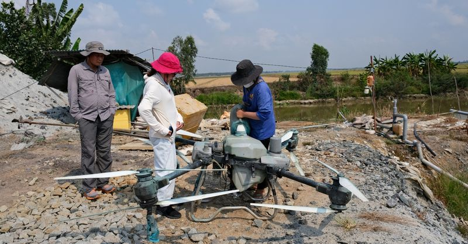
Phương pháp xử lý rơm rạ bằng chế phẩm sinh học có dễ thực hiện không? 🔗 MOI
Hỗn hợp vi sinh sau khi pha chế được đổ vào bình và thực hiện phun xịt trên đồng bằng Drone - Ảnh: ĐẶNG TUYẾT Trước đó Tuổi Trẻ Online thông tin: "Chuyên gia đề xuất giải pháp thay thế đốt rơm sau thu
Vòng 33 Premier League: Arsenal đương đầu 'nỗi sợ Murphy' 🔗 MOI
Haaland (đứng trước) sẽ gây sức ép cực lớn lên hàng thủ của Arsenal - Ảnh: REUTERS Một trận đấu mà người hâm mộ "pháo thủ" đã thấp thỏm chờ đợi suốt nhiều tháng qua, trong hành trình dài đằng đẵng hướ

Hỏa hoạn gây thiệt hại 3 căn nhà ở khu Ba Toa Đà Lạt 🔗 MOI

Trích xuất camera, truy tìm người lấy 128 triệu đồng tại cây ATM ở Khánh Hòa 🔗 MOI

G-Dragon, Jacob Elordi và cách Chanel thay đổi luật chơi thời trang nam 🔗 MOI
G-Dragon - đại sứ toàn cầu châu Á đầu tiên của Chanel - xuất hiện tại show Métiers d’Art 2025-2026 diễn ra ở New York - Ảnh: Chanel Áo khoác tweed (chất liệu dệt thô, dày dặn, thường làm từ len) và tr

Thực thi quyền tiếp cận cho người khuyết tật: Nhìn thẳng khoảng cách giữa luật và thực tiễn 🔗 MOI
Tiết mục văn nghệ của các bạn khiếm thị - Ảnh: THANH HIỆP Hội thảo thu hút nhiều nhà quản lý, nhà khoa học và người trong cuộc với hơn 100 tham luận gửi về. Không chỉ dừng ở câu chuyện chính sách, hội

Huấn luyện viên Carrick: Tinh thần vượt khó đã giúp Man United đánh bại Chelsea 🔗 MOI
Huấn luyện viên Carrick (giữa) đặc biệt khen ngợi tinh thần của CLB Man United trong chiến thắng trước Chelsea - Ảnh: AP Hành quân đến sân Stamford Bridge vào rạng sáng 19-4, huấn luyện viên Michael C

20 người nghi ngộ độc sau khi ăn bánh mì: Bộ Y tế yêu cầu khẩn trương lấy mẫu, xử lý vi phạm 🔗 MOI
Một bệnh nhi nghi ngộ độc do ăn bánh mì nhập viện Bệnh viện Đa khoa Diễn Châu, Nghệ An - Ảnh: TÂM PHẠM Cục An toàn thực phẩm nhận được thông tin ngày 18-4 trên địa bàn xã Diễn Châu, tỉnh Nghệ An ghi n

Kỳ thủ 15 tuổi Đầu Khương Duy thi đấu thăng hoa, tiến gần đẳng cấp Đại kiện tướng 🔗 MOI
Kỳ thủ Đầu Khương Duy (trái) giành chuẩn Đại kiện tướng thứ 2 - Ảnh: Bangkokchess Tại vòng 8 Giải Bangkok Chess Club Open 2026 diễn ra ngày 18-4, kỳ thủ trẻ Đầu Khương Duy bước vào cuộc đối đầu với hạ

Vòng 19 V-League 2025 - 2026: Áp lực lớn cho HLV Lê Huỳnh Đức 🔗 MOI
Áp lực cho Huấn luyện viên Lê Huỳnh Đức là không nhỏ Ảnh: N.K Bóng đá Việt Nam thường có quy tắc bất thành văn: thua 3 trận liền sẽ thay Huấn luyện viên trưởng, đặc biệt là với các đội bóng có tham vọ

Katy Perry đánh mất hình tượng trong mắt Justin Trudeau 🔗 MOI
Chuyện tình của Katy Perry và cựu Thủ tướng Canada Justin Trudeau đang gây chú ý toàn cầu - Ảnh: Cosmopolitan Katy Perry đã rời xa thời kỳ nổi loạn khi mới phát hành ca khúc I Kissed a Girl (2008) và
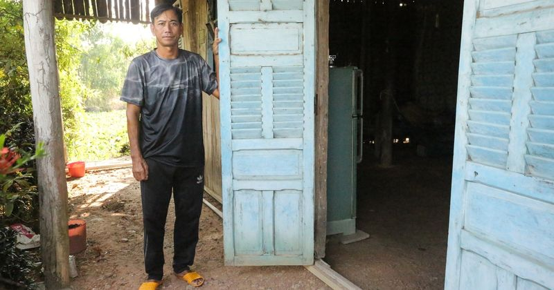
Nhà xiêu vẹo hơn 10 năm, cha bệnh tật bất lực nhìn con học dưới mái dột nát 🔗 MOI
Một ngày đầu tháng 4, phóng viên theo chân cán bộ Phòng Văn hóa - Thông tin xã Tân Long (Tây Ninh) đến thăm gia đình ông Nguyễn Quốc Ly (SN 1979), nằm sâu trong khu dân cư ấp 4, nơi ông đang sống cùng

Màn bứt phá ngoạn mục của Đỗ Hoàng Hên 🔗 MOI
Việc cây săn bàn hàng đầu như Alan đang chấn thương là cơ hội cho Hoàng Hên tiếp tục bứt phá - Ảnh: MINH ĐỖ Với cú đúp bàn thắng ghi được vào lưới Becamex TP.HCM vào tối 17-4 thuộc vòng 19 V-League 20

Thanh niên cả nước chọn 7 chương trình, 16 chỉ tiêu thực hiện Nghị quyết Đại hội Đảng 🔗 MOI
Bí thư Thứ nhất Trung ương Đoàn Bùi Quang Huy yêu cầu cán bộ Đoàn học kỹ hơn, nghĩ sâu hơn, làm quyết liệt hơn, nói đi đôi với làm, lấy hiệu quả thực tế làm thước đo uy tín và trách nhiệm - Ảnh: QUANG

Chi tiêu dè sẻn cho vừa túi tiền 🔗 MOI
Các siêu thị và nhà phân phối đã phải tung khuyến mãi, nỗ lực kìm giá để hỗ trợ người tiêu dùng - Ảnh: HỮU HẠNH Cục Thống kê (Bộ Tài chính) vừa công bố Báo cáo chỉ số giá sinh hoạt theo không gian (SC

Bộ Công an đề xuất tiếp tục giảm tội danh áp dụng hình phạt tử hình, mở rộng áp dụng hình phạt tiền 🔗 MOI
Ảnh minh họa một phiên tòa - Ảnh: ĐOÀN CƯỜNG Bộ Công an đang lấy ý kiến dự thảo hồ sơ chính sách dự án Bộ luật Hình sự (sửa đổi) đến hết ngày 7-5, trước khi trình Quốc hội cho ý kiến tại kỳ họp thứ 3,
Người phụ nữ bất ngờ xông vào nhà hàng “giải cứu” tôm hùm: Bị kiện ra tòa, nhận án treo 🔗 MOI
Người phụ nữ bất ngờ xông vào nhà hàng “giải cứu” tôm hùm: Bị kiện ra tòa, nhận án treo Theo Nguyệt Hạ | 19/04/2026 14:15 PM | Xã hội Theo dõi Cafebiz.vn trên Một nhà hoạt động vì quyền động vật tại A
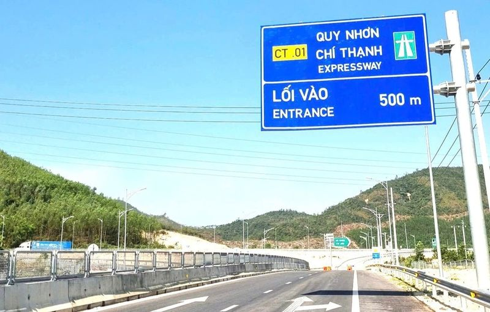
Cao tốc Bắc-Nam qua Đắk Lắk không kịp hoàn thiện 🔗 MOI
TIN MỚI Cao tốc Quy Nhơn-Chí Thạnh đang nỗ lực hoàn thiện những công đoạn cuối cùng trước khi thông xe Bộ Xây dựng vừa có văn bản đề nghị Bí thư Tỉnh uỷ và Chủ tịch UBND tỉnh Đắk Lắk quan tâm, chỉ đạo
Manh mối từ người chăn bò giúp tìm thấy 24 liệt sĩ dưới hang sâu 🔗 MOI
Khoảng 8 năm trước, vào mùa mưa, anh A Hải (32 tuổi, làng Doch 1, xã Ia Ly) như thường lệ dậy sớm lùa bò ra bãi cỏ dưới chân núi Chư Pa, cách nhà hơn một km. Gần trưa, khi việc chăn thả tạm xong, anh
Rộ tin Iran mở rộng phong tỏa eo biển Hormuz 🔗 MOI
Tàu tấn công nhanh của Iran ở eo biển Hormuz (Ảnh: Nur). Iran đóng cửa hoàn toàn Hormuz? Theo truyền thông Iran, lực lượng hải quân của Vệ binh Cách mạng Hồi giáo Iran (IRGC) cho biết họ đã mở rộng ph
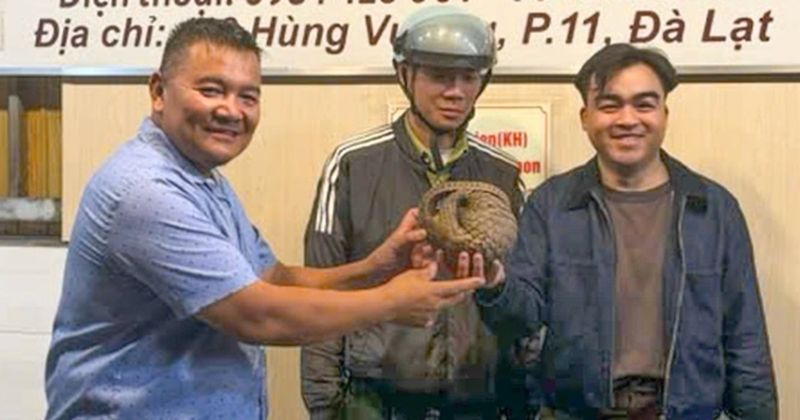
Chủ quán nhậu ở Đà Lạt phát hiện động vật quý hiếm bò vào nhà 🔗 MOI
Ngày 19/4, Hạt Kiểm lâm Đà Lạt, tỉnh Lâm Đồng, đã tiếp nhận cá thể tê tê do người dân giao nộp và thực hiện các thủ tục thả con vật về môi trường tự nhiên theo quy định. Trước đó, vào 20h30 ngày 18/4,

Diễn đàn Di Sản Cà Phê Thế Giới – Không gian đối thoại kết nối văn hóa và tri thức cà phê toàn cầu 🔗 MOI
TIN MỚI Với chủ đề "Từ những truyền thống đa dạng đến di sản sống chung của nhân loại", Diễn đàn Di sản Cà phê Thế giới góp phần làm rõ cách nhìn nhận cà phê như một "di sản sống" – có khả năng "kết n
Bắt giữ kẻ bị truy nã về hành vi trộm cắp tài sản 🔗 MOI
Ngày 19/4, thông tin từ Công an phường Mỹ Xuyên (TP Cần Thơ), đơn vị vừa bắt giữ Huỳnh Quêl (44 tuổi, trú tại phường Vĩnh Châu, TP Cần Thơ), là đối tượng bị truy nã về hành vi trộm cắp tài sản. Đối tư

Tổng Giám đốc Techcombank nhận thù lao gần 28 tỷ đồng, gấp 6 lần Chủ tịch Hồ Hùng Anh 🔗 MOI
TIN MỚI Ngân hàng TMCP Kỹ Thương Việt Nam (Techcombank) mới đây đã công bố báo cáo tài chính sau kiểm toán với nhiều số liệu đáng chú ý về thu nhập nhân sự. Theo báo cáo tài chính, năm 2025, Techcomba

Chủng mới lở mồm long móng lan rộng, nguy cơ xâm nhập Việt Nam 🔗 MOI
Ngày 19/4, Bộ Nông nghiệp và Môi trường báo cáo Chính phủ và phát đi cảnh báo về nguy cơ virus lở mồm long móng serotype SAT1 xâm nhập vào Việt Nam khi dịch bệnh trên thế giới diễn biến phức tạp, phạm

BIDV nhận giải quốc tế về truyền thông giáo dục tài chính 🔗 MOI
Trong lần đầu tiên tham dự, đại diện Việt Nam vượt qua hơn 1.000 hồ sơ đề cử từ nhiều quốc gia và vùng lãnh thổ, đạt vị trí cao nhất của hạng mục "Đổi mới trong tiếp thị đa kênh" (Innovation in Cross-

Nắng nóng uống bia có giải được nhiệt? 🔗 MOI
Trả lời: Uống bia lạnh chỉ làm giải nhiệt tạm thời, thực chất bia là cồn, lạm dụng đều gây hại. Uống nhiều bia gây giãn mạch, tăng huyết áp, đột quỵ... Ngày nắng nóng, cơ thể mất mồ hôi, mất nước, mệt
Đề xuất giải pháp ngăn chặn dịch lở mồm long móng xâm nhập vào Việt Nam 🔗 MOI
Theo Bộ Nông nghiệp và Môi trường, lở mồm long móng (LMLM) là bệnh truyền nhiễm xuyên biên giới, xuyên châu lục gây ra bởi loài vi rút thuộc họ Picornaviridae, giống Aphthovirus trên nhiều loài động v
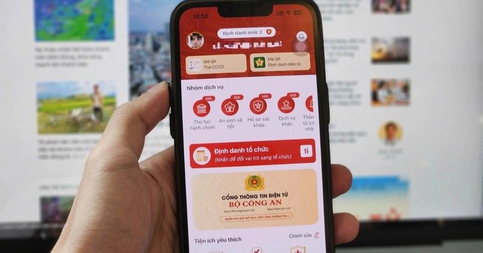
Bộ Công an đề xuất thông tin lý lịch tư pháp sẽ hiển thị trên VNeID từ 1/7 🔗 MOI
Theo dự thảo thông tư do Bộ Công an xây dựng, thông tin lý lịch tư pháp của công dân Việt Nam và người nước ngoài từ đủ 16 tuổi trở lên sẽ được đồng thời hiển thị trên ứng dụng VNeID kể từ ngày 1/7, n

Nhật Bản và Hàn Quốc nói Triều Tiên vừa phóng loạt tên lửa đạn đạo 🔗 MOI
Trong thông cáo đưa ra sáng nay (19/4), Hội đồng Tham mưu trưởng Liên quân Hàn Quốc (JCS) cho biết các lực lượng Seoul đã phát hiện quân đội Triều Tiên phóng một số tên lửa đạn đạo từ khu vực Sinpho r
Cán bộ công an ở Cà Mau kịp giúp người dân tránh bị lừa mất 300 triệu đồng 🔗 MOI
Ngày 19/4, Công an tỉnh Cà Mau thông tin, cán bộ của một đơn vị trong tỉnh này mới đây đã kịp thời hỗ trợ, ngăn chặn vụ lừa đảo chiếm đoạt tài sản của người dân. Trước đó, trong lúc làm nhiệm vụ tại m

Nicole Kidman kể về ngày hay tin mẹ qua đời 🔗 MOI
Ngày 18/4, Nicole Kidman tham dự sự kiện HISTORYTalks ở Philadelphia. Trong cuộc trò chuyện với nhà báo Hoda Kotb, cô kể lại giây phút nhận tin dữ sau khi thắng giải Nữ chính xuất sắc cho vai Romy tro

Man City đấu Arsenal: Ánh nắng kỳ diệu của Pep Guardiola 🔗 MOI
Tháng Tư của Guardiola Pep Guardiola sở hữu bộ kỹ năng rất đặc biệt, những kinh nghiệm tích lũy qua sự nghiệp dài. Đội bóng của ông có thể chệch choạc đôi chút vào mùa thu; bản thân ông có thể cáu kỉn

Johnny Trí Nguyễn và dàn sao đóng 'Hộ linh tráng sĩ' 🔗 MOI
Tài tử trở lại màn ảnh rộng với vai thứ chính - Hữu tướng quân, người bảo vệ mộ vua Đinh Tiên Hoàng trước âm mưu phá hoại của kẻ thù. Ngoài diễn xuất, Johnny Trí Nguyễn chỉ đạo hành động, tuyển một số

Những thói quen tăng nguy cơ ung thư tuyến tiền liệt 🔗 MOI
Ung thư tuyến tiền liệt là một trong những bệnh lý ác tính phổ biến ở nam giới, đặc biệt nhóm trên 50 tuổi. Theo ThS.BS.CKII Phạm Thanh Trúc, Trung tâm Tiết niệu - Thận học - Nam khoa, Bệnh viện Đa kh

Công ty trứng Ba Huân nợ bảo hiểm xã hội kéo dài, rớt khỏi kệ nhiều siêu thị 🔗 MOI
Công ty trứng Ba Huân nợ bảo hiểm xã hội kéo dài, rớt khỏi kệ nhiều siêu thị Theo An Nam | 19/04/2026 11:43 AM | Xã hội Theo dõi Cafebiz.vn trên Thương hiệu trứng Ba Huân dường như vẫn chưa thoát khỏi

Iran siết chặt eo biển Hormuz, tuyên bố nhắm mục tiêu mọi tàu tiếp cận 🔗 MOI
TIN MỚI Hải quân thuộc Lực lượng Vệ binh Cách mạng Hồi giáo cho biết Iran đã đóng eo biển Hormuz sau khi Mỹ quyết định duy trì lệnh phong tỏa các cảng biển của Tehran, vi phạm những điều kiện của thỏa

HLV De Zerbi không tin Tottenham sẽ xuống hạng 🔗 MOI
"Tôi luôn tin vào chất lượng của các cầu thủ. Đây là thời điểm cần tinh thần và thái độ đúng đắn. Mùa giải chưa kết thúc, chúng tôi còn 5 trận và 15 điểm để cạnh tranh", De Zerbi nói sau trận hòa Brig
Xem trực tiếp trận U17 Việt Nam gặp U17 Indonesia ở đâu? 🔗 MOI
Tối nay (19/4), U17 Việt Nam sẽ bước vào trận đấu cuối cùng ở bảng A giải U17 Đông Nam Á gặp U17 Indonesia. Trước trận đấu này, đoàn quân HLV Cristiano Roland đang đứng trước cơ hội lớn giành vé đi ti
HLV Arteta khẳng định Arsenal đủ sức hạ Man City 🔗 MOI
HLV Mikel Arteta của Arsenal tin rằng đội bóng của ông "hoàn toàn có khả năng" giáng một đòn quyết định vào Man City trong cuộc đua vô địch Ngoại hạng Anh, khi hai đội dẫn đầu chuẩn bị đối đầu vào tối

Kiểm tra thực địa, Bí thư Hà Nội chốt tiến độ hàng loạt dự án trọng điểm 🔗 MOI
TIN MỚI Chiều 18/4, Bí thư Thành ủy Hà Nội Trần Đức Thắng cùng đoàn công tác đã đi kiểm tra thực địa một số công trình trọng điểm trên địa bàn thành phố, gồm dự án đường Vành đai 1 (đoạn Hoàng Cầu - V
Mở tour thuyền buồm ba vách ven vịnh Hạ Long từ 25/4 🔗 MOI
Ba chiếc thuyền buồm ba vách truyền thống của ngư dân Quảng Ninh sẽ được đưa vào phục vụ du khách từ ngày 25/4, sau thời gian hoàn tất chuẩn bị và thủ tục cần thiết. Lễ khai trương tour thuyền buồm ba

Vì sao người xưa đại kỵ việc gõ bát đũa trong khi ăn cơm? 🔗 MOI
Đũa là vật dụng quen thuộc trong bữa cơm của người Việt, nhưng không phải ai cũng biết những điều kiêng kỵ khi sử dụng. Trong đó, hành động gõ đũa vào bát, đĩa khi ăn thường bị tránh. Theo quan niệm d
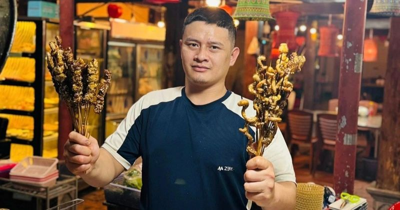
Người đàn ông Quảng Ninh vứt xe, nhảy xuống mương kéo cháu bé đang chìm dần 🔗 MOI
Khoảng 17h ngày 16/4, trên đường đi chợ về, anh Lăng Dũng (SN 1989) lái xe ngang qua phố Mạc Đăng Dung thuộc phường Đông Mai, tỉnh Quảng Ninh, bỗng nghe thấy tiếng kêu cứu thất thanh. Một người phụ nữ

Nhiều trẻ Việt dậy thì sớm, ngừng phát triển chiều cao sớm 🔗 MOI
"Trẻ béo phì có thể phát triển xương sớm, dậy thì sớm nhưng lại dừng phát triển chiều cao sớm, là lý do ban đầu cao lớn hơn bạn bè nhưng bị 'vượt mặt' khi bước vào tuổi trưởng thành", TS Phan Bích Nga
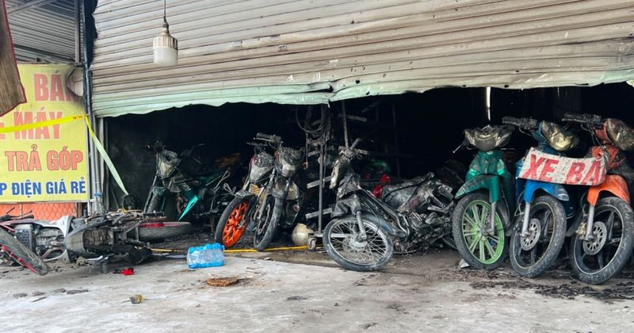
Cháy cửa hàng mua bán xe máy ở TPHCM 🔗 MOI
Sáng 19/4, Công an TPHCM vẫn đang phong tỏa hiện trường vụ cháy cửa hàng mua bán xe máy ở phường Tân Hiệp. Nhiều xe máy trong cửa hàng bị hư hỏng (Ảnh: Xuân Đoàn). Vụ cháy xảy ra khoảng 23h30 ngày 18/
HLV Guardiola: “Thua Arsenal, Man City coi như hết cửa vô địch” 🔗 MOI
Phát biểu trước trận đại chiến tối nay (22h30, 19/4), HLV Guardiola cảnh báo, nếu Man City thất bại trước Arsenal, cuộc đua gần như sẽ khép lại. “Rõ ràng, nếu chúng tôi thua thì mọi chuyện coi như kết
Danh sách 123 nhà giáo Hà Nội đề nghị xét tặng Nhà giáo nhân dân, ưu tú 🔗 MOI
Theo đó, trong 123 hồ sơ hợp lệ, thành phố tiếp nhận 5 hồ sơ đề nghị xét tặng danh hiệu Nhà giáo nhân dân (NGND) và 118 hồ sơ đề nghị xét tặng danh hiệu Nhà giáo ưu tú (NGƯT). Nhà giáo cao tuổi nhất l

Hải Phòng thu hồi 210 ha đất làm đường sắt cao tốc Hà Nội - Quảng Ninh 🔗 MOI
TIN MỚI UBND TP. Hải Phòng vừa trình HĐND thành phố thông qua danh mục 71 dự án, công trình phải thu hồi hơn 2.524ha đất. Trong đó, có 3 dự án trọng điểm về hạ tầng giao thông kết nối, có diện tích đấ

'So kè' độ sang chảnh của khoang thương gia 3 hãng hàng không hàng đầu thế giới 🔗 MOI
Trong bảng xếp hạng uy tín như Skytrax, vốn được xem như “Oscar của ngành hàng không”, những cái tên Singapore Airlines, Qatar Airways hay Emirates thường xuyên góp mặt trong nhóm dẫn đầu toàn cầu, đặ

Người đàn ông nước ngoài nổ súng sau va chạm xe ở Hưng Yên 🔗 MOI
Ngày 19/4, Công an tỉnh Hưng Yên phối hợp với Công an tỉnh Nghệ An bắt giữ Yu HaiYang, 38 tuổi, để điều tra về hành vi sử dụng trái phép vũ khí quân dụng. Kết quả điều tra ban đầu xác định, ngày 7/4,
Khu du lịch Đại Nam của bà Nguyễn Phương Hằng có thông báo quan trọng cho dịp nghỉ lễ dài ngày sắp tới 🔗 MOI
TIN MỚI Sáng nay 18/4, khu du lịch Đại Nam đưa ra thông báo mới. Theo đó, nhằm phục vụ nhu cầu của du khách trong dịp lễ sắp tới, khu du lịch sẽ mở cửa Kim điện Đại Nam và tòa Bảo Tháp 9 tầng từ ngày
Clip “hình ảnh đẹp như tiên cảnh tại hang Sơn Đoòng” nổi bật tuần qua 🔗 MOI
Hình ảnh đẹp như tiên cảnh tại hang Sơn Đoòng Hình ảnh tia nắng chiếu qua cửa hang, kết hợp với lá vàng rụng và những hạt bụi bay lơ lửng, đã tạo nên một khung cảnh tuyệt đẹp tại hang Sơn Đoòng của Vi
Nổi bật tuần qua: Tài xế đánh lái “thần sầu” tránh người đi bộ trong đêm 🔗 MOI
Tài xế xử lý “thần sầu”, tránh người đi bộ trong đêm tối Tài xế chiếc xe gắn camera hành trình đã có tình huống đánh lái kịp lúc, tránh người đi bộ trên đường trong đêm tối, đồng thời đưa chiếc xe qua
Ô tô mắc kẹt khi cố tình vượt rào chắn đường sắt, suýt bị tàu hỏa đâm 🔗 MOI
Ngày 19/4, trao đổi với phóng viên Dân trí , đại diện Cục CSGT (Bộ Công an) cho biết Đội CSGT đường bộ số 14 (Phòng CSGT Hà Nội) vừa lập biên bản xử phạt với tài xế N.C.Q. (SN 1977, ở Hà Nội) do có hà

Mổ u phổi bằng robot khác nội soi truyền thống thế nào 🔗 MOI
TS.BS Nguyễn Anh Dũng, Trưởng khoa Ngoại Lồng ngực - Mạch máu, Trung tâm Ngoại Lồng ngực - Mạch máu, Bệnh viện Đa khoa Tâm Anh TP HCM, cho biết phẫu thuật nội soi truyền thống và nội soi có robot hỗ t

Cử tri Hà Nội kiến nghị hạn chế phương tiện cá nhân vào một số khu vực trung tâm 🔗 MOI
Cử tri các phường Vĩnh Tuy, Giảng Võ, Láng, Hoàn Kiếm, Cửa Nam cho rằng cần sớm có các giải pháp quản lý nhằm hạn chế phương tiện cá nhân tại một số khu vực trung tâm; xem xét điều chỉnh giờ làm việc,

PAN Group công bố BCTC quý I/2026 với lợi nhuận gấp 40 lần, hoàn thành 87,5% kế hoạch 🔗 MOI
TIN MỚI Doanh thu tài chính tăng mạnh, lợi nhuận theo quý cao kỷ lục Trong quý I/2026, doanh thu hoạt động tài chính của PAN Group đạt 1.235 tỷ đồng, gấp 10 lần cùng kỳ. Đóng góp chính đến từ cổ tức n

TSMC dự kiến sản xuất thử nghiệm chip dưới 1nm vào năm 2029 🔗 MOI
TSMC dự kiến sản xuất thử nghiệm chip dưới 1nm vào năm 2029 Theo Đức Khương | 19/04/2026 13:30 PM | Công nghệ Theo dõi Cafebiz.vn trên TSMC đang hoạch định lộ trình sản xuất chip dưới 1nm, với mục tiê

Facebook lỗi hiển thị thời gian đăng bài trên nền tảng web 🔗 MOI
Facebook lỗi hiển thị thời gian đăng bài trên nền tảng web Theo Minh Hoàn/VTC | 19/04/2026 12:37 PM | Công nghệ Theo dõi Cafebiz.vn trên Sáng 19/4, nhiều người dùng Facebook tại Việt Nam bất ngờ ghi n
Người phụ nữ ở Hà Nội mất gần 1 tỷ đồng vì bị dụ dỗ làm nhiệm vụ online 🔗 MOI
Ngày 19/4, Phòng An ninh mạng và phòng, chống tội phạm sử dụng công nghệ cao, Công an TP Hà Nội đang xác minh tin trình báo của một phụ nữ về việc bị chiếm đoạt gần 1 tỷ đồng khi tham gia làm nhiệm vụ

Bảo hiểm từ chối chi trả khi tàu cá bị sóng đánh chìm: Lập luận các bên và phán quyết của tòa 🔗 MOI
Gửi bình luận Bình luận ( 0 ) Hiện chưa có bình luận nào, hãy là người đầu tiên bình luận Xem thêm bình luận
'Hội thánh Đức Chúa Trời Mẹ' ở Quảng Trị bị điều tra 🔗 MOI
Ngày 19/4, Công an tỉnh Quảng Trị cho biết, đang thu thập hồ sơ, tài liệu để làm rõ dấu hiệu Lừa đảo chiếm đoạt tài sản và Hành nghề mê tín, dị đoan thông qua hoạt động "Hội thánh của Đức Chúa Trời Mẹ
4 nhóm thí sinh được miễn tất cả các môn thi tốt nghiệp THPT 🔗 MOI
Quy chế thi tốt nghiệp THPT quy định 4 nhóm thí sinh sẽ không phải tham gia bất kỳ bài thi nào trong kỳ thi tốt nghiệp THPT. Nhóm thứ nhất là các thí sinh được triệu tập tham gia kỳ thi chọn đội tuyển
Người bị huyết áp thấp không nên uống Omega-3, vì sao? 🔗 MOI
Omega-3 thường được khuyến nghị tốt cho tim mạch và huyết áp nhưng tôi lại thấy thông tin cho rằng người bị huyết áp thấp không nên sử dụng. Xin bác sĩ cho biết vì sao Omega-3 lại ảnh hưởng tới người

Hansi Flick mạnh tay loại dàn sao Barca sau thất bại ở Cúp C1 🔗 MOI
MB đưa tin, Barca hiện đã bắt tay vào làm việc hướng đến mùa giải tới, với thông điệp mạnh mẽ từ thuyền trưởng Hansi Flick : sẽ có những thay đổi lớn trong đội hình. Theo nguồn trên, vị chiến lược gia

Lương, phụ cấp theo mức cơ sở 2,53 triệu đồng sẽ được tính thế nào 🔗 MOI
TIN MỚI Bộ Nội vụ đang lấy ý kiến góp ý dự thảo Thông tư hướng dẫn thực hiện mức lương cơ sở đối với các đối tượng hưởng lương, phụ cấp trong các cơ quan, tổ chức, đơn vị sự nghiệp công lập của Đảng,
Công an truy tìm người đàn ông nghi chiếm giữ 128 triệu đồng tại trụ ATM 🔗 MOI
Ngày 19/4, Công an phường Bắc Cam Ranh (tỉnh Khánh Hòa) phát thông báo truy tìm người liên quan đến vụ chiếm giữ 128 triệu đồng tại một trụ ATM trên địa bàn. Theo đó, vào tối 1/4, tại trụ ATM ở phường

'Cơn ác mộng' của nhiều người dân Đà Nẵng, nhà thấp hơn cống thoát nước 🔗 MOI
TIN MỚI Theo ghi nhận, khu vực Khe Cạn (phường Thanh Khê) có địa hình trũng thấp, cốt nền nhà dân thấp hơn hệ thống cống thoát nước công cộng. Chính yếu tố này khiến nơi đây trở thành “rốn lũ” mỗi khi

Những yếu tố giúp dự đoán thời điểm mãn kinh 🔗 MOI
Theo dược sĩ Đỗ Xuân Hòa, Trung tâm Thông tin Y khoa, Bệnh viện Đa khoa Tâm Anh TP HCM, tuổi mãn kinh trung bình của phụ nữ Việt Nam dao động 48-50 tuổi. Tuy nhiên, độ tuổi bắt đầu tiền mãn kinh không

Đề xuất công an được phạt đến 100 triệu đồng với vi phạm kinh doanh xổ số 🔗 MOI
Tại hồ sơ dự thảo sửa Nghị định về xử phạt trong kinh doanh xổ số, Bộ Tài chính đề nghị bổ sung thẩm quyền xử phạt hành chính trong lĩnh vực kinh doanh xổ số với công an, chủ tịch UBND cấp tỉnh và giá

Nỗi đau và sự cô độc ám ảnh của nữ ca sĩ 'điên nhất showbiz Việt' 🔗 MOI
Dự án cộng đồng Red moon (Trăng đỏ - PV) do ca sĩ Đồng Lan khởi xướng thực hiện nhằm hướng đến phụ nữ và những bé gái tài năng có hoàn cảnh khó khăn. Ca sĩ và ban tổ chức muốn lan tỏa thông điệp về sự

Nữ diễn viên qua đời sau khi được phát hiện bất tỉnh trong hồ bơi 🔗 MOI
Ngày 19/4, PEOPLE đưa tin Nadia Farès qua đời sau 1 tuần được phát hiện bất tỉnh tại hồ bơi. Thông tin được 2 con gái của nữ diễn viên xác nhận với Hãng Thông tấn Pháp AFP ngày 17/4. Trong thông cáo,

3 năm trước thì "tẩy chay", giờ một quốc gia lại ngậm ngùi hỏi mua sản phẩm Nga: Moscow vẫn chưa trả lời 🔗 MOI
TIN MỚI Trong bối cảnh eo biển Hormuz bị phong tỏa và các nhà máy luyện nhôm khổng lồ tại vùng Vịnh trở thành mục tiêu của các cuộc tấn công quân sự, ngành công nghiệp thế giới – đặc biệt là Nhật Bản

Mourinho gây chấn động khi có thể trở lại dẫn dắt Real Madrid 🔗 MOI
Hiện Mourinho đang dẫn dắt Benfica và vẫn nuôi tham vọng chinh phục danh hiệu quốc nội. Tuy nhiên, hành trình của ông tại UEFA Champions League đã khép lại sau khi Benfica bị chính Real Madrid loại ở

3 cặp chị em tài sắc của showbiz Việt: Người viết hit triệu view, kẻ bỏ sự nghiệp 🔗 MOI
Lưu Thiên Hương - Lưu Hương Giang Lưu Thiên Hương - Lưu Hương Giang sinh ra và lớn lên trong môi trường âm nhạc chuyên nghiệp, cả cha lẫn mẹ đều là nhạc công và ca sĩ. Từ nền tảng đó, 2 chị em xây dựn
Nam sinh đánh bạn chờ bị đuổi học và ứng xử bất ngờ của thầy hiệu trưởng 🔗 MOI
Anh Trần Thành Khôi Nguyên (cựu sinh viên Trường Đại học Bách khoa, Đại học Quốc gia TPHCM) vừa chia sẻ câu chuyện này tại khóa học về sức khỏe tinh thần, diễn ra ở Trường Đại học Sư phạm TPHCM. Chươn
Tài xế xe ôm tử vong bất thường trong phòng trọ ở TPHCM 🔗 MOI
Trưa 19/4, Công an phường Tân Hiệp đang phối hợp cùng Công an TPHCM khám nghiệm hiện trường, điều tra nguyên nhân một tài xế xe ôm tử vong trong phòng trọ. Công an phong tỏa hiện trường (Ảnh: Xuân Đoà

Khói lửa bốc cao hàng chục mét, bao trùm ngôi nhà ở Đà Lạt 🔗 MOI
Ngôi nhà trên đường Tô Ngọc Vân, phường Cam Ly – Đà Lạt, cháy dữ dội. Ảnh: X.N Khoảng 9h ngày 19/4, một vụ hỏa hoạn bất ngờ xảy ra tại ngôi nhà trên đường Tô Ngọc Vân, phường Cam Ly - Đà Lạt. Phát hiệ

Clip 'thót tim' xe bán tải bất chấp lao qua gác chắn tàu ở Hà Nội 🔗 MOI
XEM CLIP : Sáng 19/4, đại diện Cục CSGT (Bộ Công an) cho biết, Đội CSGT đường bộ số 14 (Phòng CSGT Công an Hà Nội) đã lập biên bản xử phạt tài xế xe bán tải cố tình vượt gác chắn tàu hỏa tại Km 10+400

Vì sao Arsenal vẫn sáng cửa vô địch Ngoại hạng Anh? 🔗 MOI
Cú sảy chân trước Bournemouth và chiến thắng thuyết phục của Man City trước Chelsea khiến cuộc đua vô địch Ngoại hạng Anh bất ngờ nóng trở lại. Khoảng cách giữa Arsenal và Man City bị rút ngắn từ chín

HLV Chelsea không rõ hậu quả nếu lỡ Champions League 🔗 MOI
Thất bại tối thiểu ngay tại Stamford Bridge khiến Chelsea dậm chân ở vị trí thứ sáu Ngoại hạng Anh với 48 điểm. Họ có nguy cơ bị các đối thủ xếp trên Liverpool (52 điểm) và Aston Villa (55) nới rộng c
Thủ tướng Lê Minh Hưng dâng hương tại Khu di tích Ngã ba Đồng Lộc 🔗 MOI
Sáng 19/4, Thủ tướng Chính phủ Lê Minh Hưng cùng đoàn công tác đã đến Khu di tích lịch sử cấp quốc gia đặc biệt Ngã ba Đồng Lộc (xã Đồng Lộc, tỉnh Hà Tĩnh). Thủ tướng Lê Minh Hưng dâng hương, hoa tại
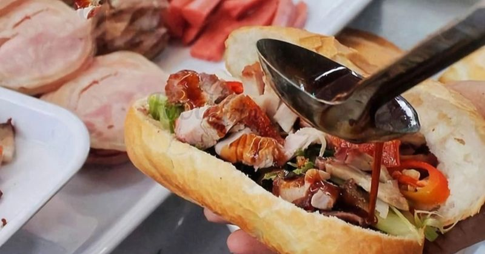
Nghệ An: Hơn 20 người nhập viện sau khi ăn bánh mì, Bộ Y tế chỉ đạo khẩn 🔗 MOI
Ngày 18/4, trên địa bàn xã Diễn Châu (tỉnh Nghệ An) ghi nhận hơn 20 trường hợp phải nhập viện cấp cứu, nghi do ngộ độc thực phẩm sau khi sử dụng bánh mì. Các bệnh nhân xuất hiện triệu chứng điển hình

Bộ Nội vụ thông tin về lịch nghỉ lễ Giỗ Tổ và 30/4 -1/5 🔗 MOI
Bộ Nội vụ thông tin về lịch nghỉ lễ Giỗ Tổ và 30/4 -1/5 Theo Ban Thời sự | 19/04/2026 11:13 AM | Xã hội Theo dõi Cafebiz.vn trên Bộ Nội vụ vừa xác nhận lịch nghỉ lễ Giỗ Tổ và 30/4 -1/5 năm nay sẽ giữ

Cháy nhà ở trung tâm Đà Lạt 🔗 MOI
Khoảng 9h30, lửa bốc lên tại căn nhà rộng khoảng 50 m2, một trệt một lầu làm bằng gỗ, ở góc đường Tô Ngọc Vân – Nguyễn Thị Định, phường Cam Ly. Người dân phát hiện, dùng nước dập lửa nhưng không hiệu

Tại sao da hay nổi mụn trong kỳ kinh nguyệt? 🔗 MOI
Chu kỳ kinh nguyệt được tính từ ngày đầu tiên của kỳ kinh nguyệt đến ngày đầu tiên của kỳ tiếp theo, có thể kéo dài 28 đến 35 ngày. Dược sĩ Đỗ Xuân Hòa, Trung tâm Thông tin Y khoa, Bệnh viện Đa khoa T
Nhắn tin vào trang công an, người phụ nữ tìm được cha thất lạc 32 năm 🔗 MOI
Ngày 19/4, Công an tỉnh Thanh Hóa thông tin, Công an phường Đông Sơn đã hỗ trợ một người phụ nữ tìm thấy người cha thất lạc suốt 32 năm. Trước đó, ngày 16/4, chị Lê Thị Hằng (SN 1992, trú tại xã Hậu L

Công an Hà Nội sẽ làm việc với quản trị viên nhóm 'xe ghép', 'xe tiện chuyến' 🔗 MOI
Công an Hà Nội sẽ làm việc với quản trị viên nhóm 'xe ghép', 'xe tiện chuyến' Theo Anh Văn | 19/04/2026 11:00 AM | Xã hội Theo dõi Cafebiz.vn trên Công an Hà Nội sẽ phối hợp với các đơn vị mời chủ tài
CĐV Indonesia tuyên bố chỉ có phép màu mới giúp đội nhà thắng U17 Việt Nam 🔗 MOI
"Chiến thắng 1-0 của đội tuyển U17 Indonesia trước U17 Việt Nam trong trận đấu cuối cùng đủ để đưa đội bóng của chúng ta vào bán kết. Thậm chí nếu U17 Malaysia thua U17 Timor Leste ở lượt đấu cuối, U1
Cảnh sát cơ động giúp người đàn ông khuyết tật dọn lúa chạy mưa 🔗 MOI
Ngày 19/4, mạng xã hội xuất hiện hình ảnh nhóm cán bộ, chiến sĩ Cảnh sát Cơ động (Công an tỉnh Quảng Ngãi) hỗ trợ người đàn ông khuyết tật thu gom lúa. Nhiều người dùng mạng xã hội bày tỏ đây là việc

Thi hành Lệnh bắt tạm giam đối với Nguyễn Gia Hoàng SN 1999 🔗 MOI
Thi hành Lệnh bắt tạm giam đối với Nguyễn Gia Hoàng SN 1999 Theo Duy Anh | 19/04/2026 10:50 AM | Xã hội Theo dõi Cafebiz.vn trên Nguyễn Gia Hoàng là đối tượng đã “giăng bẫy” đổi ngoại tệ, chiếm đoạt g

Bộ Y tế vào cuộc vụ hơn 20 người nghi ngộ độc bánh mì 🔗 MOI
Bộ Y tế vào cuộc vụ hơn 20 người nghi ngộ độc bánh mì Theo N.Dung | 19/04/2026 10:44 AM | Xã hội Theo dõi Cafebiz.vn trên Hơn 20 người ở Nghệ An nhập viện với triệu chứng nghi ngộc sau khi ăn bánh mì,
Ngọn lửa thiêu rụi nhà dân ở Đà Lạt 🔗 MOI
Cảnh sát phun nước khống chế hỏa hoạn ở Đà Lạt Vụ hỏa hoạn xảy ra vào khoảng 9h ngày 19/4, tại căn nhà trên đường Tô Ngọc Vân, phường Cam Ly - Đà Lạt, tỉnh Lâm Đồng. Theo thông tin ban đầu, thời gian
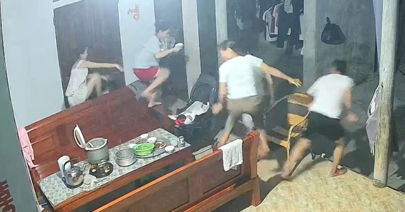
Cả gia đình bỏ chạy khỏi mâm cơm vì rắn dài hơn 1m bò vào nhà 🔗 MOI
Tối 18/4, mạng xã hội Facebook lan truyền video trích xuất từ camera ghi lại cảnh một gia đình hoảng loạn bỏ chạy khi đang ăn cơm tối vì có rắn bò vào nhà. Theo nội dung video, gia đình gồm 5 người lớ
HLV Carrick tuyên bố đanh thép sau chiến thắng quý giá của Man Utd 🔗 MOI
Rạng sáng 19/4, Man Utd đã giành chiến thắng quý giá với tỷ số 1-0 trước Chelsea ngay trên sân Stamford Bridge. Chiến thắng này giúp Quỷ đỏ tiến gần hơn tới tấm vé tham dự Champions League. Họ đang xế
Cá voi xuất hiện trên vùng biển Mũi Né ở Lâm Đồng 🔗 MOI
Ngày 19/4, mạng xã hội lan truyền đoạn video ghi cảnh một con cá voi lớn xuất hiện tại vùng biển gần bờ ở phường Mũi Né, tỉnh Lâm Đồng. Hình ảnh video thể hiện cảnh cá voi dài khoảng 5m bơi và thỉnh t

7 món nam giới nên dùng thường xuyên sau tuổi 30 🔗 MOI
Các loại đậu Đây là nguồn dinh dưỡng phong phú, hỗ trợ sức khỏe tim mạch, xây dựng cơ bắp, kiểm soát cân nặng và tiêu hóa. Chúng cũng cung cấp kẽm, magie và folate, góp phần giảm cholesterol và nguy

Khi nào trẻ chảy máu cam cần đi khám? 🔗 MOI
Trả lời: Chảy máu cam là tình trạng chảy máu từ niêm mạc mũi ra mũi trước hoặc chảy ra mũi sau xuống họng, thường gặp ở trẻ 2-10 tuổi. Chảy máu cam có 2 nhóm: chảy máu cam trước (máu chảy từ phần trướ

Điều gì xảy ra với hệ tiêu hóa khi uống nước chanh ấm mỗi ngày? 🔗 MOI
Có lợi cho gan Chanh giàu chất chống oxy hóa gồm vitamin C (axit ascorbic), flavonoid. Vitamin C có khả năng giảm stress oxy hóa - yếu tố liên quan đến sự phát triển của bệnh gan nhiễm mỡ. Các flavono

Slovakia sẽ kiện EU về lệnh cấm khí đốt của Nga 🔗 MOI
TIN MỚI Thủ tướng Slovakia Robert Fico. Tháng 1/2026, EU đã chính thức thông qua kế hoạch loại bỏ dần khí đốt qua đường ống của Nga vào năm 2027, bất chấp sự phủ quyết của Slovakia và Hungary. “Chúng

Dự báo thời tiết 19/4: Miền Bắc và Thanh Hóa mưa dông, nguy cơ sấm sét, mưa đá 🔗 MOI
Dự báo thời tiết 19/4: Miền Bắc và Thanh Hóa mưa dông, nguy cơ sấm sét, mưa đá Theo Huệ Nguyễn/VTC | 19/04/2026 09:48 AM | Xã hội Theo dõi Cafebiz.vn trên Ngày 19/4, miền Bắc và Thanh Hoá xuất hiện mư

Thái Lan cảnh báo khẩn về dịch "sốt đất": 732 ca nhiễm, 23 trường hợp tử vong 🔗 MOI
TIN MỚI Thái Lan vừa báo cáo một đợt bùng phát nghiêm trọng bệnh Melioidosis, hay còn gọi là "sốt đất", với 732 ca nhiễm và 23 trường hợp tử vong được ghi nhận kể từ đầu năm. Căn bệnh này do một loại
Cảnh sát khống chế hỏa hoạn ở Đà Lạt 🔗 MOI
Cảnh sát khống chế hỏa hoạn ở Đà Lạt (Video: Trương Khởi - Minh Hậu).
TPHCM khám sức khỏe miễn phí cho 15 triệu dân: Bạn có được khám không? 🔗 MOI
TPHCM khám sức khỏe miễn phí cho 15 triệu dân.

Muốn gọi cấp cứu cũng khó, người điếc cần videophone có phiên dịch 🔗 MOI
Hệ thống cuộc gọi video có hỗ trợ phiên dịch ngôn ngữ ký hiệu (videophone) rất cần cho người khiếm thính - Ảnh minh họa: TIO Không thể nghe, không thể nói thành lời qua điện thoại dù là video call, ng

Quán 'siêu sạch' và trường 'quốc tế' 🔗 MOI
Đừng uống cà phê 70% đậu nành, hãy uống nguyên chất - Tranh minh họa: Hải Nam Tôi nhớ một buổi sáng cách đây không lâu ở một thành phố, có quán cà phê với tấm biển lớn treo phía trên: "Cà phê siêu sạc

🔗 MOI
Mấy ông bụng bự hãy thử suất ăn healthy này xem có bớt mập không nè. Suất ăn bán trú bị cắt xén - Tranh: Hữu Lộc Suất ăn giảm bụng bự - Tranh: NOP Suất ăn bán trú vừa 'thiếu' vừa 'yếu' Cùng với tình t